B1 · GPT-6 Astra · attempt DLnYjHW
Batch tb8 · job tb8_B_base_conditioned_media_gpt-6-astra · trial B_base_conditioned_media__DLnYjHW. Long tool outputs are cut at 6,000 characters.
0.29
33.0
$19.80
158
151
task prompt (instruction.md)
<environment_context> <cwd>/task</cwd> <shell>bash</shell> <current_date>2026-11-06</current_date> <timezone>Etc/UTC</timezone> <filesystem><workspace_roots><root>/task</root></workspace_roots><permission_profile type="disabled"><file_system type="unrestricted" /></permission_profile></filesystem> </environment_context>
user message
# Conditioned-media caspase plate (16-Dec-2022): analyse, conclude, decide
You are the analyst for this experiment: analyse the plate, answer the plan's question, and recommend the next step.
## Inputs (read-only)
| path | content |
|---|---|
| `/task/inputs/plan.md` | Notebook plan for this run: purpose, rationale, reagents, protocol, plate maps, cytometer settings |
| `/task/inputs/plate_layout.csv` | One row per FCS file: `file, well, sample, cell_line, camptothecin, conditioned_media` (plate-map wording) |
| `/task/inputs/start.flow` | Cytoflow workflow with the Import step configured: one tube per FCS file; conditions = `well` + the layout columns |
| `/task/inputs/raw/` | 78 FCS 3.1 files (Thermo Attune NxT, acquired 16-Dec-2022), wells A1–F12 and G1–G6 |
## Environment
- **Software.** Cytoflow 1.3.2 on the virtual screen, driven with `cu`. Use `cu paste` for file paths in dialogs.
- **Start.** File → Open → `/task/inputs/start.flow`, then answer "Yes" to run it.
- Importing all 78 files takes under a minute.
- Leave "Events per sample" unset (full data).
- **GUI only.** All gating, statistics and data exports must be done in the Cytoflow GUI.
- **Terminal.** Bash with Python 3 (numpy, pandas, matplotlib, openpyxl) and no flow-cytometry libraries. Use it only for:
- reading the inputs;
- tabulating CSVs exported from Cytoflow;
- plotting;
- writing the report and answer files.
Do not read or parse FCS files from the terminal.
- **Event counts per well per gate.** Use a Channel Statistic (count) grouped by `well`, show it in a Table view, and export it to CSV.
- **Network.** None.
## Channels
On-screen channel names are the labels stored inside the FCS files ($PnS). They may be out of date. Use the plan's reagent list and cytometer settings to decide what each detector measured.
| detector | name shown in Cytoflow |
|---|---|
| FSC-A / FSC-H / FSC-W | FSC-A / FSC-H / FSC-W |
| SSC-A / SSC-H / SSC-W | SSC-A / SSC-H / SSC-W |
| BL1-A / BL1-H / BL1-W | AAV-GFP-GFP-A / AAV-GFP-GFP-H / AAV-GFP-GFP-W |
| BL2-A / BL2-H / BL2-W | AAdvanced livedead-A / AAdvanced livedead-H / AAdvanced livedead-W |
| Time | Time |
## Deliverables (all in `/task/outputs/`)
### 1. `workflow.flow`
- Save it from Cytoflow (File → Save As → `/task/outputs/workflow.flow`).
- Every population in `counts.csv` except `all_events` must be a gate operation in this workflow with exactly the same name.
- These gates must be the ones that produced `counts.csv`.
### 2. `counts.csv`
Columns, in order: `file, well, population, role, parent, count, pct_of_parent`.
**Rows**
- One row per FCS file × population, covering all 78 files.
- Every file has the same population set.
**Columns**
- `file`: exact FCS file name. `well`: as in `plate_layout.csv`.
- `population`: your gate names (no commas). Each file also has one row with `population` = `all_events`, `role` = `other`, `parent` = `none`, `count` = total events and `pct_of_parent` empty.
- `role` ∈ {`cells`, `singlets`, `live`, `marker_positive`, `other`}.
- Each of `cells`, `singlets`, `live` and `marker_positive` is used by exactly one population, the same population in every file.
- `other` may be used by any number of populations.
- `parent`: the parent population's name (another population of the same file, or `all_events`). Use `none` only for `all_events`.
- `count`: integer number of events in the population.
- `pct_of_parent`: 100 × count / parent count.
### 3. `flags.csv`
Columns, in order: `file, well, issue_type, evidence, decision`. Exactly one row per FCS file (78 rows).
- Flag any well whose data should not be used, with evidence.
- `issue_type` ∈ {`none`, `clog`, `ran_dry`, `too_few_events`, `saturation`, `bad_control`, `mislabel`, `other`}. If a well has several issues, give the main one here and describe the rest in `evidence`.
- `evidence`: required unless `issue_type` = `none`. It must cite at least one number taken from the data.
- `decision` ∈ {`keep`, `keep_with_note`, `exclude`}.
- Wells marked `exclude` must appear in `answer.json` → `excluded_wells` and must not be used in `condition_summary.csv`.
### 4. `condition_summary.csv`
Columns, in order: `condition, wells, n_wells_used, mean, sd, metric_definition, normalisation_applied`. One row per condition you define.
- `condition`: your name for the condition. Names must be unique and contain no commas.
- `wells`: the plate wells used, separated by `;` (e.g. `X1;X2`).
- `n_wells_used`: integer, equal to the number of wells listed.
- `mean`, `sd`: computed across the listed wells, in the units of your metric. Leave `sd` empty when `n_wells_used` = 1.
- `metric_definition`: which population counts form the numerator and the denominator, or another exact definition.
- `normalisation_applied`: `none`, or the exact formula used.
### 5. `figure.png`
The main result chart.
### 6. `report.md`
These headings, in this order: `## Question`, `## Methods`, `## Results`, `## Conclusion`, `## Caveats`, `## Recommendation`.
### 7. `answer.json`
```
{"question": str,
"comparisons": [{"comparison": str, "a": <condition>, "b": <condition>,
"direction": "increase"|"decrease"|"no_clear_change",
"magnitude": str, "confidence": "high"|"medium"|"low"}],
"overall_answer": "yes: ..." | "partial: ..." | "no: ...",
"assay_verdict": "fit_for_purpose"|"needs_optimisation"|"not_fit_for_purpose",
"next_action": <ACTION>,
"next_change": {"what": str, "from": str, "to": str, "why": str},
"excluded_wells": [well IDs],
"caveats": [str]}
```
- `comparisons`: at least one comparison.
- `a` and `b` must be `condition` values from `condition_summary.csv`.
- `direction` describes `a` relative to `b` (`increase` = a higher than b).
- `magnitude` states the size of the difference, with a number.
- `overall_answer` must start with `yes:`, `partial:` or `no:`.
- `next_action` ∈ {`proceed_as_planned`, `repeat_unchanged`, `repeat_with_change`, `optimise_reagent_or_setting`, `change_treatment_or_timing`, `switch_assay`, `stop`}.
- `next_change`: the change you recommend, as an object: `what` (the step, reagent or condition to change), `from` (its value as run), `to` (the value you recommend) and `why`. Use empty strings if you recommend no change.
- `excluded_wells`: well IDs (e.g. `G1`) that have `decision` = `exclude` in `flags.csv`. Use `[]` if there are none.
## Constraints
- Time budget: 5 hours.
- Do not modify anything in `/task/inputs/`.
---
## How you operate this computer
You work from a **terminal** (bash, working directory `/task`). The analysis program, **Cytoflow 1.3.2**, is already running on a virtual screen (1440×900). You see and control that screen with the `cu` command:
| Command | What it does |
|---|---|
| `cu screenshot /tmp/screen.png` | Save a screenshot. Then **open/view the image file** to see the screen. |
| `cu click X Y` · `cu click X Y right` · `cu click X Y double` | Mouse click at pixel X,Y |
| `cu drag X1 Y1 X2 Y2` · `cu move X Y` · `cu scroll X Y down 3` | Drag, move, scroll |
| `cu type "text"` · `cu paste "text"` · `cu key ctrl+s` | Keyboard (use `cu paste` for file paths) |
Take a fresh screenshot after actions to check what happened.
- **Cytoflow.** If a "Welcome to Cytoflow!" dialog is showing, close it. In file dialogs, paste the full path (e.g. `/task/inputs/start.flow`) into the *File name* box.
- **Gating must be done in Cytoflow on screen.** Do not install or use flow-cytometry libraries (flowkit, flowio, fcsparser, FlowCytometryTools, the cytoflow Python API, etc.) to gate or count events. Python (numpy, pandas, matplotlib, openpyxl) is available for working with exported tables and writing reports.
- **Inputs** are in `/task/inputs/` (read-only). **Write every deliverable to `/task/outputs/`.** Only that folder is collected for grading.
- **Limits.** There is no limit on the number of actions; the only limit is the time budget above. Save `workflow.flow` and your output files early and often.
const r = await tools.exec_command({cmd:"pwd && rg --files /task -g 'AGENTS.md' -g 'plan.md' -g 'plate_layout.csv' && cat /task/inputs/plan.md && cat /task/inputs/plate_layout.csv","max_output_tokens":16000});text(r);
text(await tools.exec_command({cmd:"cu screenshot /tmp/screen.png","max_output_tokens":1000}));
const im=await tools.view_image({path:"/tmp/screen.png"});image(im.image_url);
text(await tools.clock__curr_time({}));
Script completed Wall time 0.2 seconds Output:
{"chunk_id":"780071","wall_time_seconds":0.00000371,"exit_code":0,"original_token_count":2836,"output":"/task\n/task/inputs/plate_layout.csv\n/task/inputs/plan.md\n# Plan: Caspase activity assay development with progranulin conditioned media (H4 cells)\n\nSource: lab notebook entry (target PGRN; assay development; cell-based; flow; cell type H4). This plan covers the plate acquired on 16-Dec-2022. People's names, and all text written after acquisition, have been removed.\n\n## Purpose\nTo determine if progranulin conditioned media can restore wild-type levels of caspase activity in H4 GRN KO cells.\n\n## Rationale\nPrevious literature evidence suggests that applying exogenous progranulin to cells can restore molecular phenotypes in progranulin deficient lines. Our previous experiment with caspase activity on H4 GRN WT and KO cells showed that GRN KO lines had increased caspase activity. This difference was enhanced after campothesin challenge in both GRN WT and KO cells. In this experiment, we will determine if applying conditioned media from WT cell lines onto KO lines can reduce caspase activity closer to WT levels.\n\n## Materials\n- H4 WT cells\n- H4 PGRN KO E1\n- H4 PGRN KO E3\n- H4 media (DMEM + 10% FBS)\n- CellEvent Caspase-3/7 Green Flow Cytometry Assay Kit\n- SYTOX AAdvanced Dead Cell Stain\n- Camptothecin\n\n## Protocol\n\n### 2022-12-12: conditioned-media donor plate\n- Passage WT H4 cells into 96 well plate (10K/well). This plate is the one the media is collected from.\n\nDonor plate map, as written (12 columns per line):\n\n```\nWT WT WT WT WT WT WT WT WT WT WT WT\nWT WT WT WT WT WT WT WT WT WT WT WT\nWT WT WT WT WT WT WT WT WT WT WT WT\n24hr\nWT WT WT WT WT WT WT WT WT WT WT WT\nWT WT WT WT WT WT WT WT WT WT WT WT\nWT WT WT WT WT WT WT WT WT WT WT WT\n48hr\n```\n\nRed = 24 hr media collection; Purple = 48hr media collection. Cell colours of this map were not preserved in the export.\n\n### 2022-12-13\n2. Collect media from 24hr wells\n3. Spin down at 2000xg for 10min @4C and collect into fresh plate\n\n### 2022-12-14\n4. Collect media from 48hr wells\n5. Spin down at 2000xg for 10min. Collect into fresh plate\n- Passage all H4 lines into 96 well plate for assay (10K/well) according to the assay plate map below.\n\n### Assay plate map\nThe map is as written. Row letters A–H and column numbers 1–12 have been added for orientation.\n\n| | 1 | 2 | 3 | 4 | 5 | 6 | 7 | 8 | 9 | 10 | 11 | 12 |\n|---|---|---|---|---|---|---|---|---|---|---|---|---|\n| A | WT 10uM | WT 5uM | WT 2uM | WT DMSO | WT 10uM | WT 5uM | WT 2uM | WT DMSO | WT 10uM | WT 5uM | WT 2uM | WT DMSO |\n| B | E1 10uM | E1 5uM | E1 2uM | E1 DMSO | E1 10uM | E1 5uM | E1 2uM | E1 DMSO | E1 10uM | E1 5uM | E1 2uM | E1 DMSO |\n| C | E3 10uM | E3 5uM | E3 2uM | E3 DMSO | E3 10uM | E3 5uM | E3 2uM | E3 DMSO | E3 10uM | E3 5uM | E3 2uM | E3 DMSO |\n| D | WT 10uM | WT 5uM | WT 2uM | WT DMSO | WT 10uM | WT 5uM | WT 2uM | WT DMSO | WT 10uM | WT 5uM | WT 2uM | WT DMSO |\n| E | E1 10uM | E1 5uM | E1 2uM | E1 DMSO | E1 10uM | E1 5uM | E1 2uM | E1 DMSO | E1 10uM | E1 5uM | E1 2uM | E1 DMSO |\n| F | E3 10uM | E3 5uM | E3 2uM | E3 DMSO | E3 10uM | E3 5uM | E3 2uM | E3 DMSO | E3 10uM | E3 5uM | E3 2uM | E3 DMSO |\n| G | WT no treatment (no stain) | WT L/D only | WT Caspase only | E1 untreated | E3 untreated | WT untreated | | | | | | |\n| H | 24hr conditioned media | | | | 48hr conditoned media | | | | No condtioned media | | | |\n\nCell colours in the notebook:\n- Rows A–F, columns 1–4: blue (#94B5DD).\n- Rows A–F, columns 5–8: green (#D5F0AD).\n- Rows A–F, columns 9–12: uncoloured.\n- Row G: uncoloured.\n- Row H: \"24hr conditioned media\" is blue; \"48hr conditoned media\" is green; \"No condtioned media\" is uncoloured.\n\n### 2022-12-15\n6. Rinse wells with DMEM and then add conditioned media\n\n### 2022-12-16\n7. Add camptothecin to wells at indicated dose. Incubate for 4.5hr\n8. Run flow\n\n### Staining and acquisition (assay protocol as written in this entry)\n- Aspirate media and wash with PBS\n- Add 150uL trypsin incubate for 5min\n- Add 75uL FBS and collect into 96w round bottom plate\n- spin down 200xg for 5min\n- Add 200uL of Cell Event Caspase 3/7 Detection reagent (1:1000) in flow staining buffer. Incubate for 30min at 37C\n- Prepare SYTOX AAdvanced Dead Cell Stain at 100uM concentration by adding 1000uL DMSO to stain. Mix well\n- During the final 5 minutes of 30min Caspase incubation add 2uL of the 100uM Dead Cell stain (final concentration of 1uM)\n- Analyze the samples without fixing.\n\nFlow cytometer settings: FSC-20; SSC-290; BL1 (caspase)-225, BL2 (AAddvanced Dead Cell Stain)-350\n\n## Acquisition\n- Instrument: Thermo Attune NxT.\n- Date: 16-Dec-2022.\n- Files: 78 FCS files, one per well (A1–F12 and G1–G6).\nfile,well,sample,cell_line,camptothecin,conditioned_media\nCaspase-assay-2-mlk(1)_caspase_Group_A1.fcs,A1,WT 10uM,WT,10uM,24hr conditioned media\nCaspase-assay-2-mlk(1)_caspase_Group_A2.fcs,A2,WT 5uM,WT,5uM,24hr conditioned media\nCaspase-assay-2-mlk(1)_caspase_Group_A3.fcs,A3,WT 2uM,WT,2uM,24hr conditioned media\nCaspase-assay-2-mlk(1)_caspase_Group_A4.fcs,A4,WT DMSO,WT,DMSO,24hr conditioned media\nCaspase-assay-2-mlk(1)_caspase_Group_A5.fcs,A5,WT 10uM,WT,10uM,48hr conditioned media\nCaspase-assay-2-mlk(1)_caspase_Group_A6.fcs,A6,WT 5uM,WT,5uM,48hr conditioned media\nCaspase-assay-2-mlk(1)_caspase_Group_A7.fcs,A7,WT 2uM,WT,2uM,48hr conditioned media\nCaspase-assay-2-mlk(1)_caspase_Group_A8.fcs,A8,WT DMSO,WT,DMSO,48hr conditioned media\nCaspase-assay-2-mlk(1)_caspase_Group_A9.fcs,A9,WT 10uM,WT,10uM,No conditioned media\nCaspase-assay-2-mlk(1)_caspase_Group_A10.fcs,A10,WT 5uM,WT,5uM,No conditioned media\nCaspase-assay-2-mlk(1)_caspase_Group_A11.fcs,A11,WT 2uM,WT,2uM,No conditioned media\nCaspase-assay-2-mlk(1)_caspase_Group_A12.fcs,A12,WT DMSO,WT,DMSO,No conditioned media\nCaspase-assay-2-mlk(1)_caspase_Group_B1.fcs,B1,E1 10uM,E1,10uM,24hr condi
… [5,610 more characters not shown]{"chunk_id":"8f618d","wall_time_seconds":0.00000376,"exit_code":0,"original_token_count":4,"output":"/tmp/screen.png\n"}
{"current_time":"2026-11-06 00:33:22 UTC"}text(await tools.exec_command({cmd:"mkdir -p /task/outputs && cu click 910 493 && cu click 92 70","max_output_tokens":1000}));
text(await tools.exec_command({cmd:"cu screenshot /tmp/screen.png","max_output_tokens":1000}));image((await tools.view_image({path:"/tmp/screen.png"})).image_url);
Script completed Wall time 0.3 seconds Output:
{"chunk_id":"c29e06","wall_time_seconds":0.063532284,"exit_code":0,"original_token_count":0,"output":""}{"chunk_id":"c7c8a6","wall_time_seconds":0.00000319,"exit_code":0,"original_token_count":4,"output":"/tmp/screen.png\n"}
text(await tools.exec_command({cmd:"cu paste '/task/inputs/start.flow' && cu click 1310 744","max_output_tokens":1000}));
text(await tools.exec_command({cmd:"cu screenshot /tmp/screen.png","max_output_tokens":1000}));image((await tools.view_image({path:"/tmp/screen.png"})).image_url);
Script completed Wall time 1.6 seconds Output:
{"chunk_id":"cde8c7","wall_time_seconds":1.289123223,"exit_code":0,"original_token_count":0,"output":""}{"chunk_id":"d250f5","wall_time_seconds":0.00000387,"exit_code":0,"original_token_count":4,"output":"/tmp/screen.png\n"}
text(await tools.exec_command({cmd:"cu click 1314 746","max_output_tokens":1000}));text(await tools.exec_command({cmd:"cu screenshot /tmp/screen.png","max_output_tokens":1000}));image((await tools.view_image({path:"/tmp/screen.png"})).image_url);
Script completed Wall time 0.2 seconds Output:
{"chunk_id":"816050","wall_time_seconds":0.00000302,"exit_code":0,"original_token_count":0,"output":""}{"chunk_id":"d94caf","wall_time_seconds":0.00000374,"exit_code":0,"original_token_count":4,"output":"/tmp/screen.png\n"}
text(await tools.exec_command({cmd:"cu click 750 449","max_output_tokens":1000}));
text(await tools.exec_command({cmd:"cu screenshot /tmp/screen.png","max_output_tokens":1000}));image((await tools.view_image({path:"/tmp/screen.png"})).image_url);
Script completed Wall time 0.2 seconds Output:
{"chunk_id":"7fad39","wall_time_seconds":0.00000298,"exit_code":0,"original_token_count":0,"output":""}{"chunk_id":"eff06e","wall_time_seconds":0.00000278,"exit_code":0,"original_token_count":4,"output":"/tmp/screen.png\n"}
text(await tools.exec_command({cmd:"cu screenshot /tmp/screen.png","max_output_tokens":1000}));image((await tools.view_image({path:"/tmp/screen.png"})).image_url);
Script completed Wall time 0.1 seconds Output:
{"chunk_id":"d28d01","wall_time_seconds":0.0000031,"exit_code":0,"original_token_count":4,"output":"/tmp/screen.png\n"}
text(await tools.exec_command({cmd:"cu click 242 180 && cu key ctrl+shift+s","max_output_tokens":1000}));text(await tools.exec_command({cmd:"cu screenshot /tmp/screen.png","max_output_tokens":1000}));image((await tools.view_image({path:"/tmp/screen.png"})).image_url);
Script completed Wall time 0.3 seconds Output:
{"chunk_id":"5ba821","wall_time_seconds":0.00000316,"exit_code":0,"original_token_count":0,"output":""}{"chunk_id":"2ff073","wall_time_seconds":0.00000397,"exit_code":0,"original_token_count":4,"output":"/tmp/screen.png\n"}
text(await tools.exec_command({cmd:"cu click 22 30","max_output_tokens":1000}));text(await tools.exec_command({cmd:"cu screenshot /tmp/screen.png","max_output_tokens":1000}));image((await tools.view_image({path:"/tmp/screen.png"})).image_url);
Script completed Wall time 0.2 seconds Output:
{"chunk_id":"3e7294","wall_time_seconds":0.00000287,"exit_code":0,"original_token_count":0,"output":""}{"chunk_id":"ce51fa","wall_time_seconds":0.0000034,"exit_code":0,"original_token_count":4,"output":"/tmp/screen.png\n"}
text(await tools.exec_command({cmd:"cu click 78 101","max_output_tokens":1000}));text(await tools.exec_command({cmd:"cu screenshot /tmp/screen.png","max_output_tokens":1000}));image((await tools.view_image({path:"/tmp/screen.png"})).image_url);
Script completed Wall time 0.2 seconds Output:
{"chunk_id":"a45943","wall_time_seconds":0.0000032,"exit_code":0,"original_token_count":0,"output":""}{"chunk_id":"20ae94","wall_time_seconds":0.00000311,"exit_code":0,"original_token_count":4,"output":"/tmp/screen.png\n"}
text(await tools.exec_command({cmd:"cu paste '/task/outputs/workflow.flow' && cu key Return","max_output_tokens":1000}));text(await tools.exec_command({cmd:"cu screenshot /tmp/screen.png","max_output_tokens":1000}));image((await tools.view_image({path:"/tmp/screen.png"})).image_url);
Script completed Wall time 1.5 seconds Output:
{"chunk_id":"6ff3f6","wall_time_seconds":1.197423651,"exit_code":0,"original_token_count":0,"output":""}{"chunk_id":"e47845","wall_time_seconds":0.00001011,"exit_code":0,"original_token_count":4,"output":"/tmp/screen.png\n"}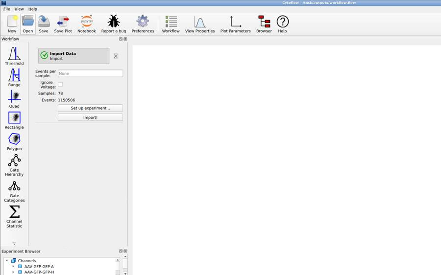
text(await tools.exec_command({cmd:"cu click 47 455","max_output_tokens":1000}));text(await tools.exec_command({cmd:"cu screenshot /tmp/screen.png","max_output_tokens":1000}));image((await tools.view_image({path:"/tmp/screen.png"})).image_url);
Script completed Wall time 0.2 seconds Output:
{"chunk_id":"0a01b4","wall_time_seconds":0.00000383,"exit_code":0,"original_token_count":0,"output":""}{"chunk_id":"c64a9f","wall_time_seconds":0.00000323,"exit_code":0,"original_token_count":4,"output":"/tmp/screen.png\n"}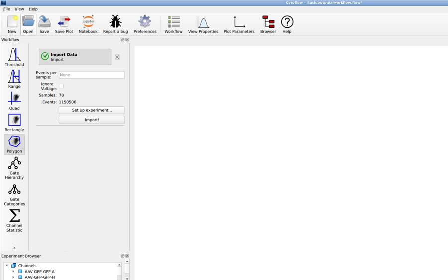
text(await tools.exec_command({cmd:"cu screenshot /tmp/screen.png","max_output_tokens":1000}));image((await tools.view_image({path:"/tmp/screen.png"})).image_url);
Script completed Wall time 0.1 seconds Output:
{"chunk_id":"2ccc17","wall_time_seconds":0.0000035,"exit_code":0,"original_token_count":4,"output":"/tmp/screen.png\n"}
text(await tools.exec_command({cmd:"cu click 274 322 && cu type 'cells' && cu click 351 354","max_output_tokens":1000}));text(await tools.exec_command({cmd:"cu screenshot /tmp/screen.png","max_output_tokens":1000}));image((await tools.view_image({path:"/tmp/screen.png"})).image_url);
Script completed Wall time 0.5 seconds Output:
{"chunk_id":"fd8b1a","wall_time_seconds":0.194694169,"exit_code":0,"original_token_count":0,"output":""}{"chunk_id":"5d8adc","wall_time_seconds":0.00000396,"exit_code":0,"original_token_count":4,"output":"/tmp/screen.png\n"}
text(await tools.exec_command({cmd:"cu click 222 498 && cu click 353 385 && cu key s && cu key Return && cu click 653 72","max_output_tokens":1000}));text(await tools.exec_command({cmd:"cu screenshot /tmp/screen.png","max_output_tokens":1000}));image((await tools.view_image({path:"/tmp/screen.png"})).image_url);
Script completed Wall time 0.5 seconds Output:
{"chunk_id":"b3a8b9","wall_time_seconds":0.200305067,"exit_code":0,"original_token_count":0,"output":""}{"chunk_id":"85f4b4","wall_time_seconds":0.00000339,"exit_code":0,"original_token_count":4,"output":"/tmp/screen.png\n"}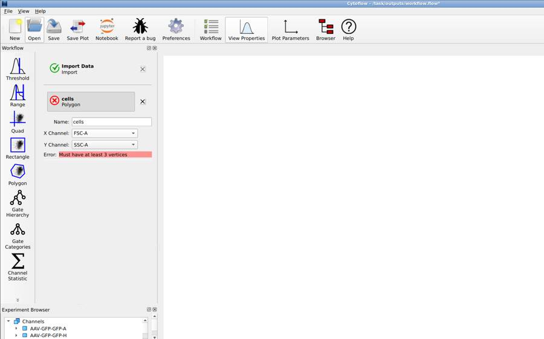
text(await tools.exec_command({cmd:"cu screenshot /tmp/screen.png","max_output_tokens":1000}));image((await tools.view_image({path:"/tmp/screen.png"})).image_url);
Script completed Wall time 0.1 seconds Output:
{"chunk_id":"7e34e5","wall_time_seconds":0.00000303,"exit_code":0,"original_token_count":4,"output":"/tmp/screen.png\n"}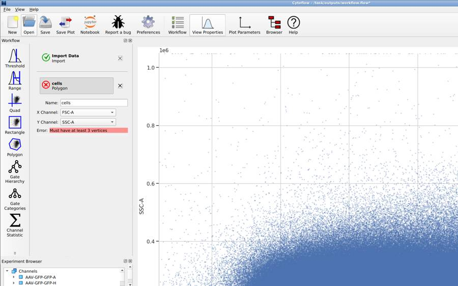
text(await tools.exec_command({cmd:"cu click 654 68","max_output_tokens":1000}));text(await tools.exec_command({cmd:"cu screenshot /tmp/screen.png","max_output_tokens":1000}));image((await tools.view_image({path:"/tmp/screen.png"})).image_url);
Script completed Wall time 0.3 seconds Output:
{"chunk_id":"7abcd7","wall_time_seconds":0.00000299,"exit_code":0,"original_token_count":0,"output":""}{"chunk_id":"bf7430","wall_time_seconds":0.00000352,"exit_code":0,"original_token_count":4,"output":"/tmp/screen.png\n"}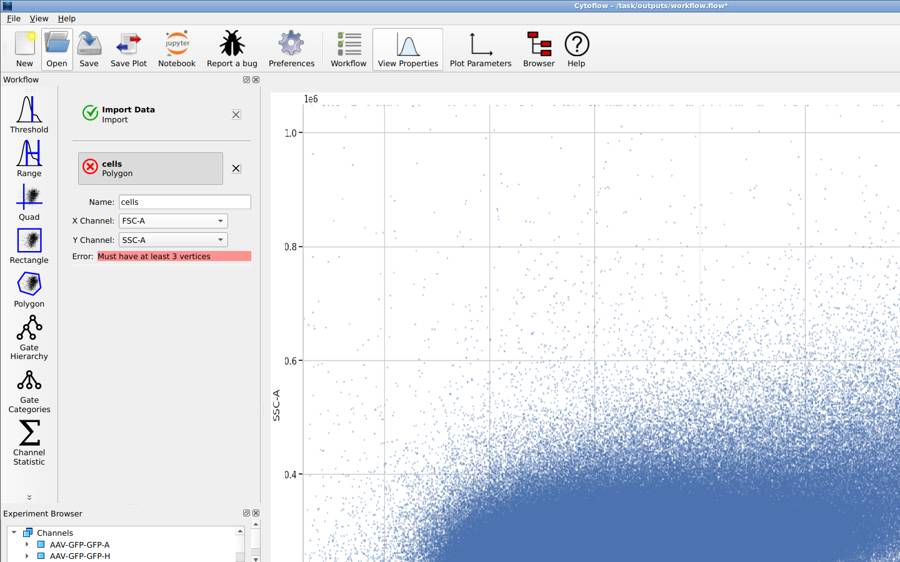
text(await tools.exec_command({cmd:"cu key alt+F10","max_output_tokens":1000}));text(await tools.exec_command({cmd:"cu screenshot /tmp/screen.png","max_output_tokens":1000}));image((await tools.view_image({path:"/tmp/screen.png"})).image_url);
Script completed Wall time 0.2 seconds Output:
{"chunk_id":"ba18b3","wall_time_seconds":0.00000307,"exit_code":0,"original_token_count":0,"output":""}{"chunk_id":"e8e87f","wall_time_seconds":0.00000429,"exit_code":0,"original_token_count":4,"output":"/tmp/screen.png\n"}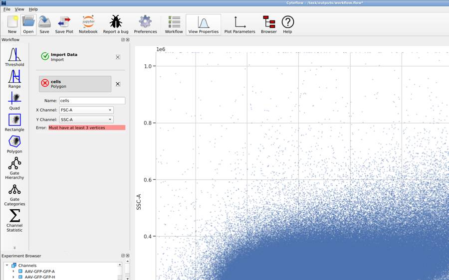
text(await tools.exec_command({cmd:"cu key alt+space","max_output_tokens":1000}));text(await tools.exec_command({cmd:"cu screenshot /tmp/screen.png","max_output_tokens":1000}));image((await tools.view_image({path:"/tmp/screen.png"})).image_url);
Script completed Wall time 0.2 seconds Output:
{"chunk_id":"8b63d1","wall_time_seconds":0.00000315,"exit_code":0,"original_token_count":0,"output":""}{"chunk_id":"6db9a4","wall_time_seconds":0.00000425,"exit_code":0,"original_token_count":4,"output":"/tmp/screen.png\n"}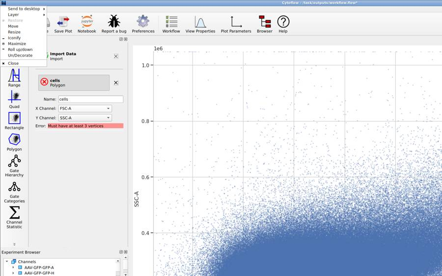
text(await tools.exec_command({cmd:"cu click 64 142","max_output_tokens":1000}));text(await tools.exec_command({cmd:"cu screenshot /tmp/screen.png","max_output_tokens":1000}));image((await tools.view_image({path:"/tmp/screen.png"})).image_url);
Script completed Wall time 0.3 seconds Output:
{"chunk_id":"3a654d","wall_time_seconds":0.0000038,"exit_code":0,"original_token_count":0,"output":""}{"chunk_id":"3a7bf1","wall_time_seconds":0.00000425,"exit_code":0,"original_token_count":4,"output":"/tmp/screen.png\n"}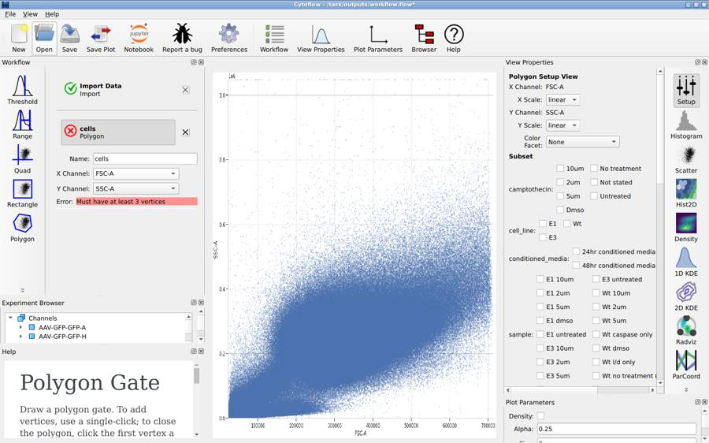
text(await tools.exec_command({cmd:"cu click 1166 201 && cu key l && cu key Return && cu click 1167 254 && cu key l && cu key Return","max_output_tokens":1000}));text(await tools.exec_command({cmd:"cu screenshot /tmp/screen.png","max_output_tokens":1000}));image((await tools.view_image({path:"/tmp/screen.png"})).image_url);
Script completed Wall time 0.4 seconds Output:
{"chunk_id":"2b170c","wall_time_seconds":0.123978028,"exit_code":0,"original_token_count":0,"output":""}{"chunk_id":"9dc11b","wall_time_seconds":0.00000346,"exit_code":0,"original_token_count":4,"output":"/tmp/screen.png\n"}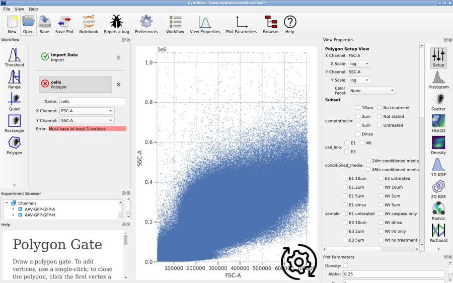
text(await tools.exec_command({cmd:"cu screenshot /tmp/screen.png","max_output_tokens":1000}));image((await tools.view_image({path:"/tmp/screen.png"})).image_url);
Script completed Wall time 0.1 seconds Output:
{"chunk_id":"8abe83","wall_time_seconds":0.00000414,"exit_code":0,"original_token_count":4,"output":"/tmp/screen.png\n"}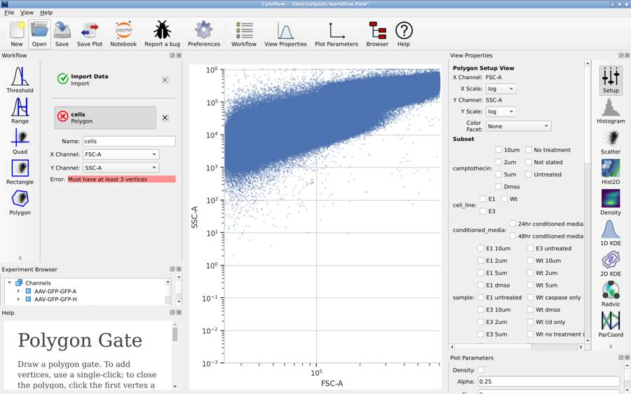
text(await tools.exec_command({cmd:"cu click 1167 202 && cu key Home && cu key Return && cu click 1167 254 && cu key Home && cu key Return && cu click 1097 843","max_output_tokens":1000}));text(await tools.exec_command({cmd:"cu screenshot /tmp/screen.png","max_output_tokens":1000}));image((await tools.view_image({path:"/tmp/screen.png"})).image_url);
Script completed Wall time 0.5 seconds Output:
{"chunk_id":"24fbe2","wall_time_seconds":0.232771283,"exit_code":0,"original_token_count":0,"output":""}{"chunk_id":"54d3f0","wall_time_seconds":0.00000418,"exit_code":0,"original_token_count":4,"output":"/tmp/screen.png\n"}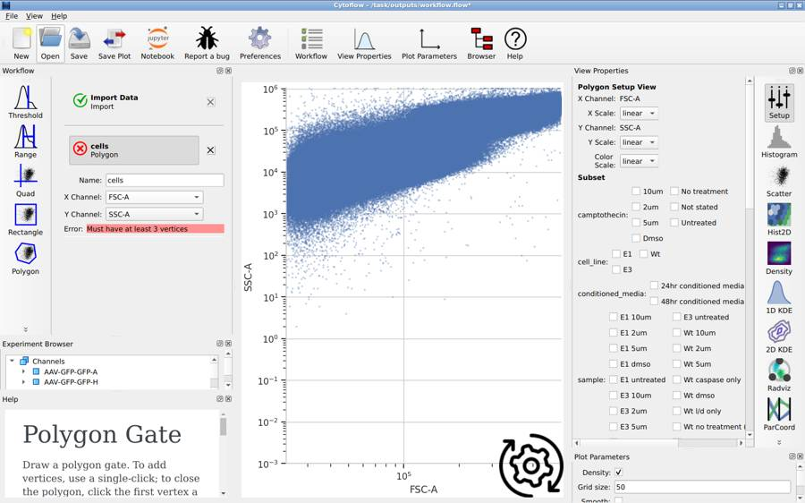
text(await tools.exec_command({cmd:"cu screenshot /tmp/screen.png","max_output_tokens":1000}));image((await tools.view_image({path:"/tmp/screen.png"})).image_url);
Script completed Wall time 0.1 seconds Output:
{"chunk_id":"58f08e","wall_time_seconds":0.00000375,"exit_code":0,"original_token_count":4,"output":"/tmp/screen.png\n"}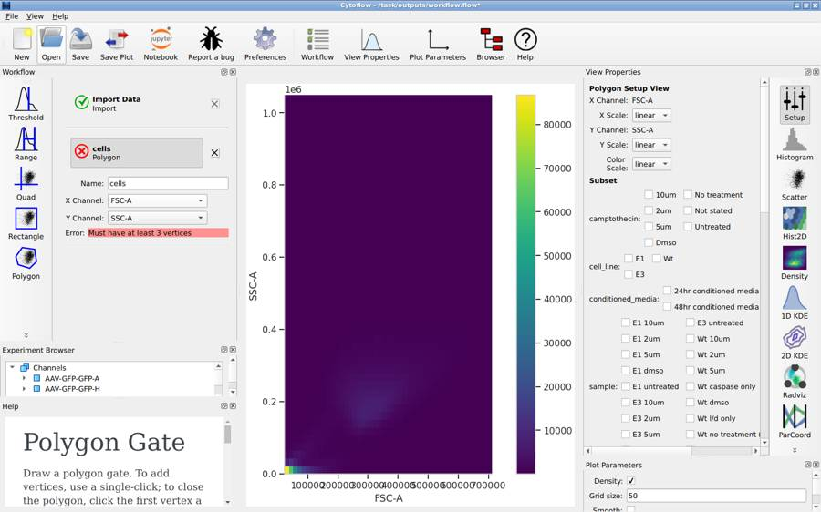
text(await tools.exec_command({cmd:"cu click 1167 289 && cu key l && cu key Return","max_output_tokens":1000}));text(await tools.exec_command({cmd:"cu screenshot /tmp/screen.png","max_output_tokens":1000}));image((await tools.view_image({path:"/tmp/screen.png"})).image_url);
Script completed Wall time 0.3 seconds Output:
{"chunk_id":"521177","wall_time_seconds":0.00000365,"exit_code":0,"original_token_count":0,"output":""}{"chunk_id":"0074d3","wall_time_seconds":0.00000348,"exit_code":0,"original_token_count":4,"output":"/tmp/screen.png\n"}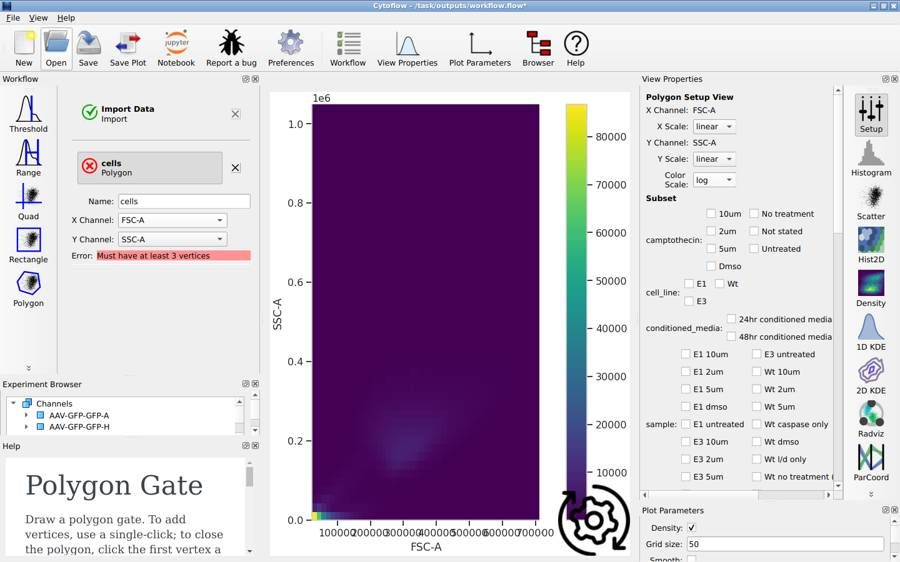
text(await tools.exec_command({cmd:"cu screenshot /tmp/screen.png","max_output_tokens":1000}));image((await tools.view_image({path:"/tmp/screen.png"})).image_url);
Script completed Wall time 0.1 seconds Output:
{"chunk_id":"e56c40","wall_time_seconds":0.00000382,"exit_code":0,"original_token_count":4,"output":"/tmp/screen.png\n"}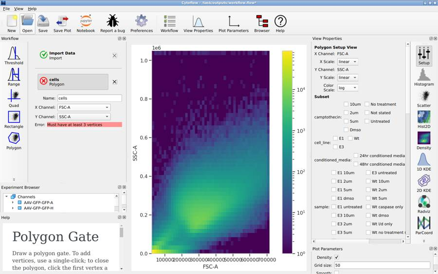
text(await tools.exec_command({cmd:"cu click 565 790 && cu click 650 790 && cu click 883 732 && cu click 883 345 && cu click 602 510 && cu click 552 674 && cu click 565 790 double && cu key ctrl+s","max_output_tokens":1000}));text(await tools.exec_command({cmd:"cu screenshot /tmp/screen.png","max_output_tokens":1000}));image((await tools.view_image({path:"/tmp/screen.png"})).image_url);
Script completed Wall time 1.0 seconds Output:
{"chunk_id":"7ecd67","wall_time_seconds":0.724249938,"exit_code":0,"original_token_count":0,"output":""}{"chunk_id":"18cf16","wall_time_seconds":0.00000354,"exit_code":0,"original_token_count":4,"output":"/tmp/screen.png\n"}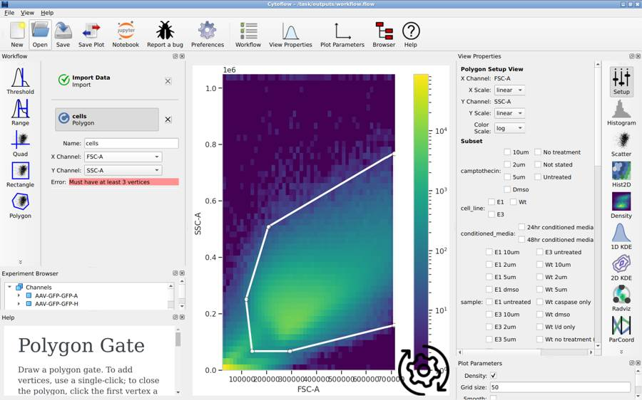
text(await tools.exec_command({cmd:"cu click 46 454","max_output_tokens":1000}));text(await tools.exec_command({cmd:"cu screenshot /tmp/screen.png","max_output_tokens":1000}));image((await tools.view_image({path:"/tmp/screen.png"})).image_url);
Script completed Wall time 0.2 seconds Output:
{"chunk_id":"c4ffc9","wall_time_seconds":0.00000338,"exit_code":0,"original_token_count":0,"output":""}{"chunk_id":"54d571","wall_time_seconds":0.0000039,"exit_code":0,"original_token_count":4,"output":"/tmp/screen.png\n"}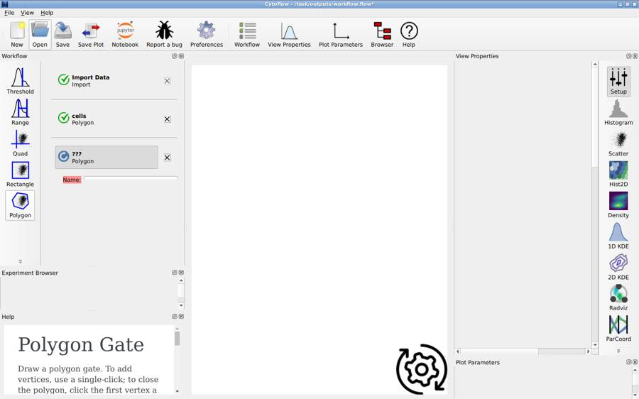
text(await tools.exec_command({cmd:"cu screenshot /tmp/screen.png","max_output_tokens":1000}));image((await tools.view_image({path:"/tmp/screen.png"})).image_url);
Script completed Wall time 0.1 seconds Output:
{"chunk_id":"aeb927","wall_time_seconds":0.0000038,"exit_code":0,"original_token_count":4,"output":"/tmp/screen.png\n"}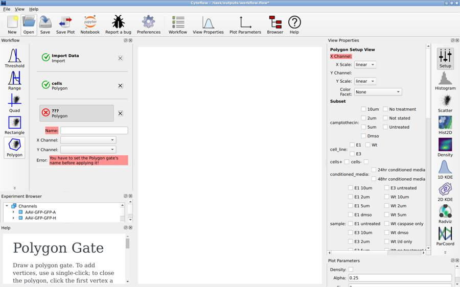
text(await tools.exec_command({cmd:"cu click 282 410 && cu type 'singlet_shape' && cu click 350 439 && cu key f && cu key Return && cu click 350 470 && cu key f && cu key Down && cu key Return && cu click 1086 508","max_output_tokens":1000}));text(await tools.exec_command({cmd:"cu screenshot /tmp/screen.png","max_output_tokens":1000}));image((await tools.view_image({path:"/tmp/screen.png"})).image_url);
Script completed Wall time 1.0 seconds Output:
{"chunk_id":"f719ee","wall_time_seconds":0.687485964,"exit_code":0,"original_token_count":0,"output":""}{"chunk_id":"8657fc","wall_time_seconds":0.0000042,"exit_code":0,"original_token_count":4,"output":"/tmp/screen.png\n"}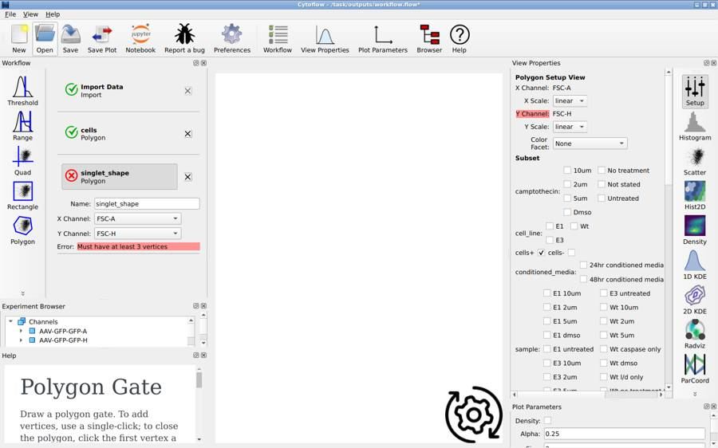
text(await tools.exec_command({cmd:"cu screenshot /tmp/screen.png","max_output_tokens":1000}));image((await tools.view_image({path:"/tmp/screen.png"})).image_url);
Script completed Wall time 0.1 seconds Output:
{"chunk_id":"299943","wall_time_seconds":0.00000459,"exit_code":0,"original_token_count":4,"output":"/tmp/screen.png\n"}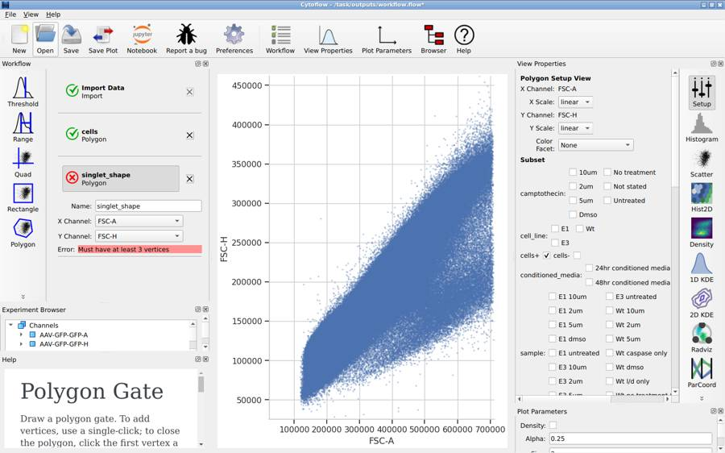
text(await tools.exec_command({cmd:"cu click 597 787 && cu click 976 405 && cu click 976 216 && cu click 597 711 && cu click 597 787 double && cu key ctrl+s && cu scroll 46 548 down 3","max_output_tokens":1000}));text(await tools.exec_command({cmd:"cu screenshot /tmp/screen.png","max_output_tokens":1000}));image((await tools.view_image({path:"/tmp/screen.png"})).image_url);
Script completed Wall time 1.1 seconds Output:
{"chunk_id":"8aeef0","wall_time_seconds":0.819940078,"exit_code":0,"original_token_count":0,"output":""}{"chunk_id":"a1d214","wall_time_seconds":0.00000334,"exit_code":0,"original_token_count":4,"output":"/tmp/screen.png\n"}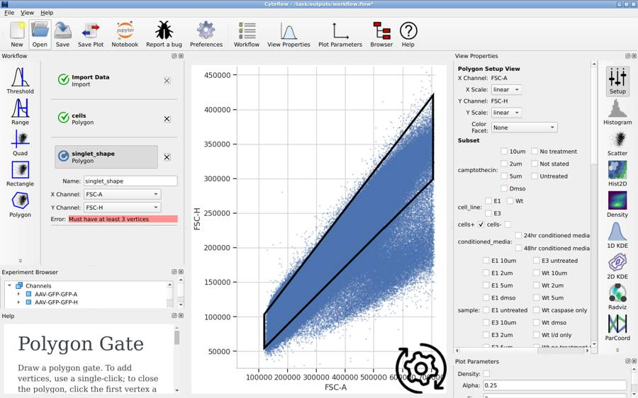
text(await tools.exec_command({cmd:"cu click 46 589 && cu click 46 589 && cu click 46 589","max_output_tokens":1000}));text(await tools.exec_command({cmd:"cu screenshot /tmp/screen.png","max_output_tokens":1000}));image((await tools.view_image({path:"/tmp/screen.png"})).image_url);
Script completed Wall time 0.4 seconds Output:
{"chunk_id":"a92763","wall_time_seconds":0.16892335,"exit_code":0,"original_token_count":0,"output":""}{"chunk_id":"7f5a82","wall_time_seconds":0.00000313,"exit_code":0,"original_token_count":4,"output":"/tmp/screen.png\n"}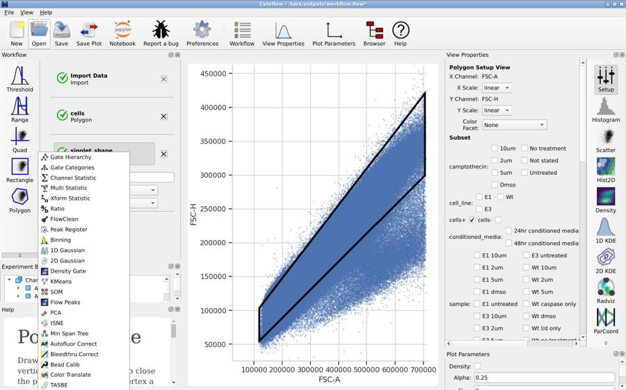
text(await tools.exec_command({cmd:"cu click 183 363","max_output_tokens":1000}));text(await tools.exec_command({cmd:"cu screenshot /tmp/screen.png","max_output_tokens":1000}));image((await tools.view_image({path:"/tmp/screen.png"})).image_url);
Script completed Wall time 0.3 seconds Output:
{"chunk_id":"c4ac31","wall_time_seconds":0.00000318,"exit_code":0,"original_token_count":0,"output":""}{"chunk_id":"90ab29","wall_time_seconds":0.00000403,"exit_code":0,"original_token_count":4,"output":"/tmp/screen.png\n"}text(await tools.exec_command({cmd:"cu click 170 362","max_output_tokens":1000}));text(await tools.exec_command({cmd:"cu screenshot /tmp/screen.png","max_output_tokens":1000}));image((await tools.view_image({path:"/tmp/screen.png"})).image_url);
Script completed Wall time 0.2 seconds Output:
{"chunk_id":"4092b7","wall_time_seconds":0.00000314,"exit_code":0,"original_token_count":0,"output":""}{"chunk_id":"42c97d","wall_time_seconds":0.00000387,"exit_code":0,"original_token_count":4,"output":"/tmp/screen.png\n"}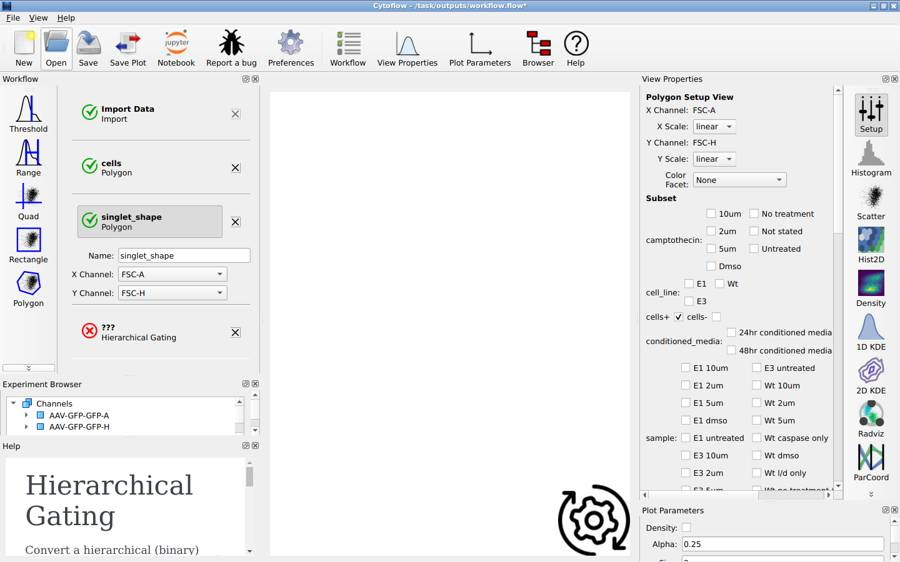
text(await tools.exec_command({cmd:"cu click 239 532 && cu scroll 330 533 down 4","max_output_tokens":1000}));text(await tools.exec_command({cmd:"cu screenshot /tmp/screen.png","max_output_tokens":1000}));image((await tools.view_image({path:"/tmp/screen.png"})).image_url);
Script completed Wall time 0.6 seconds Output:
{"chunk_id":"babc75","wall_time_seconds":0.365817438,"exit_code":0,"original_token_count":0,"output":""}{"chunk_id":"86f994","wall_time_seconds":0.0000038,"exit_code":0,"original_token_count":4,"output":"/tmp/screen.png\n"}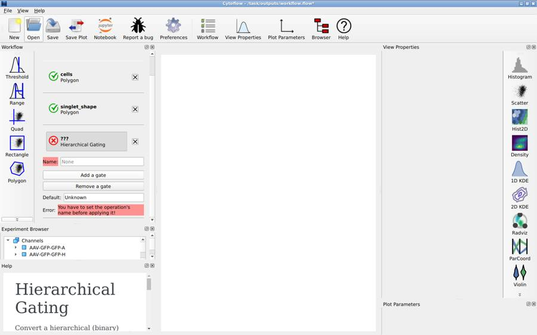
text(await tools.exec_command({cmd:"cu click 266 434 && cu key ctrl+a && cu type 'singlets' && cu click 251 469","max_output_tokens":1000}));text(await tools.exec_command({cmd:"cu screenshot /tmp/screen.png","max_output_tokens":1000}));image((await tools.view_image({path:"/tmp/screen.png"})).image_url);
Script completed Wall time 0.6 seconds Output:
{"chunk_id":"a28cf1","wall_time_seconds":0.298105715,"exit_code":0,"original_token_count":0,"output":""}{"chunk_id":"359bd0","wall_time_seconds":0.00000345,"exit_code":0,"original_token_count":4,"output":"/tmp/screen.png\n"}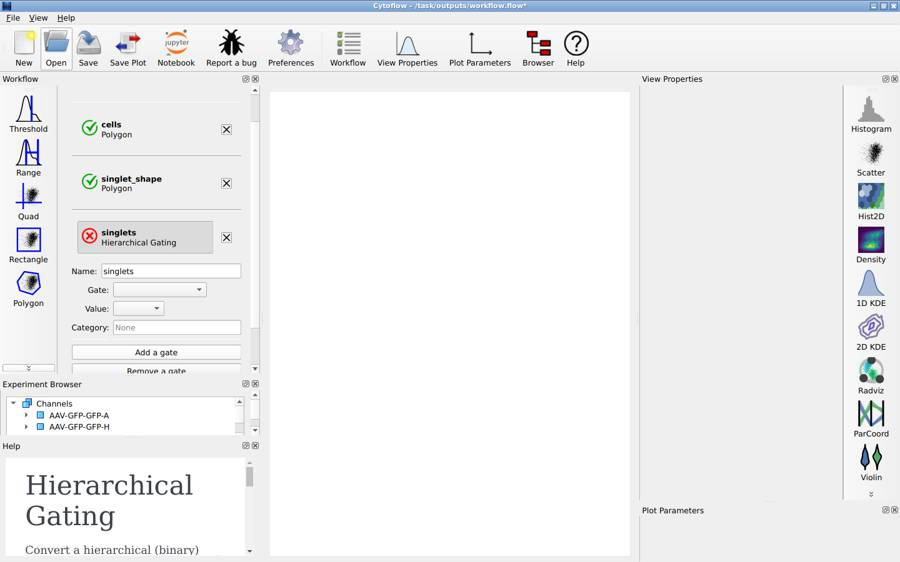
text(await tools.exec_command({cmd:"cu click 317 462","max_output_tokens":1000}));text(await tools.exec_command({cmd:"cu screenshot /tmp/screen.png","max_output_tokens":1000}));image((await tools.view_image({path:"/tmp/screen.png"})).image_url);
Script completed Wall time 0.2 seconds Output:
{"chunk_id":"e304d1","wall_time_seconds":0.00000335,"exit_code":0,"original_token_count":0,"output":""}{"chunk_id":"fc837e","wall_time_seconds":0.00000379,"exit_code":0,"original_token_count":4,"output":"/tmp/screen.png\n"}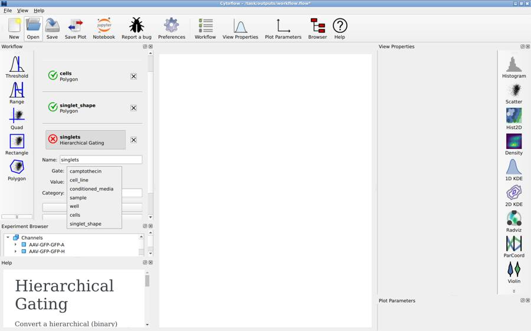
text(await tools.exec_command({cmd:"cu key Escape && cu scroll 281 833 down 4","max_output_tokens":1000}));text(await tools.exec_command({cmd:"cu screenshot /tmp/screen.png","max_output_tokens":1000}));image((await tools.view_image({path:"/tmp/screen.png"})).image_url);
Script completed Wall time 0.5 seconds Output:
{"chunk_id":"46a862","wall_time_seconds":0.273197706,"exit_code":0,"original_token_count":0,"output":""}{"chunk_id":"f9712c","wall_time_seconds":0.00000348,"exit_code":0,"original_token_count":4,"output":"/tmp/screen.png\n"}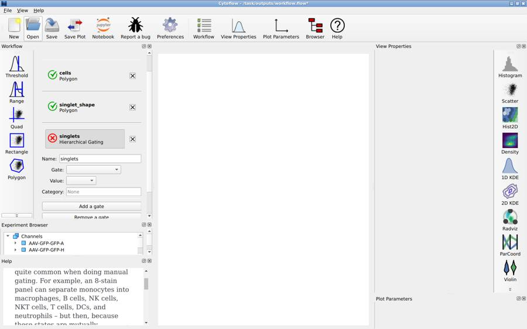
text(await tools.exec_command({cmd:"cu scroll 281 833 up 2 && cu drag 223 705 223 473","max_output_tokens":1000}));text(await tools.exec_command({cmd:"cu screenshot /tmp/screen.png","max_output_tokens":1000}));image((await tools.view_image({path:"/tmp/screen.png"})).image_url);
Script completed Wall time 0.4 seconds Output:
{"chunk_id":"8ac80e","wall_time_seconds":0.091564492,"exit_code":0,"original_token_count":0,"output":""}{"chunk_id":"be8a16","wall_time_seconds":0.00000395,"exit_code":0,"original_token_count":4,"output":"/tmp/screen.png\n"}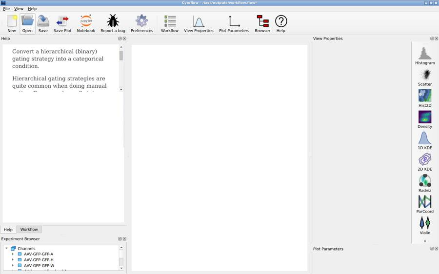
text(await tools.exec_command({cmd:"cu click 95 753 && cu click 363 380","max_output_tokens":1000}));text(await tools.exec_command({cmd:"cu screenshot /tmp/screen.png","max_output_tokens":1000}));image((await tools.view_image({path:"/tmp/screen.png"})).image_url);
Script completed Wall time 0.3 seconds Output:
{"chunk_id":"1c2c37","wall_time_seconds":0.063661314,"exit_code":0,"original_token_count":0,"output":""}{"chunk_id":"6c7ccf","wall_time_seconds":0.00000403,"exit_code":0,"original_token_count":4,"output":"/tmp/screen.png\n"}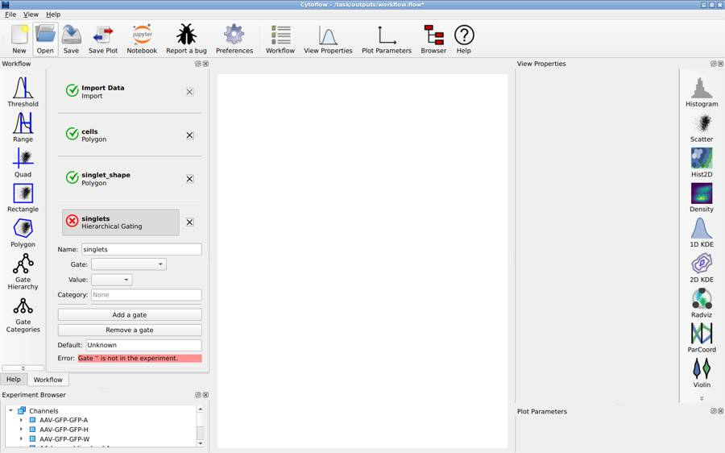
text(await tools.exec_command({cmd:"cu click 377 441","max_output_tokens":1000}));text(await tools.exec_command({cmd:"cu screenshot /tmp/screen.png","max_output_tokens":1000}));image((await tools.view_image({path:"/tmp/screen.png"})).image_url);
Script completed Wall time 0.2 seconds Output:
{"chunk_id":"3a5f97","wall_time_seconds":0.00000293,"exit_code":0,"original_token_count":0,"output":""}{"chunk_id":"38d412","wall_time_seconds":0.00000387,"exit_code":0,"original_token_count":4,"output":"/tmp/screen.png\n"}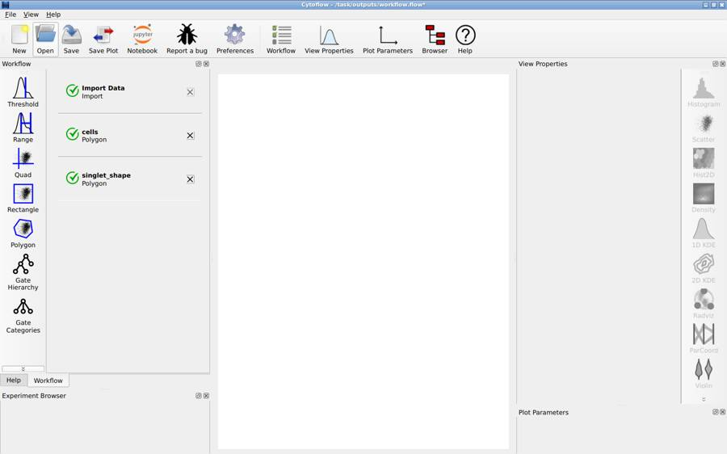
text(await tools.exec_command({cmd:"cu click 242 351","max_output_tokens":1000}));text(await tools.exec_command({cmd:"cu screenshot /tmp/screen.png","max_output_tokens":1000}));image((await tools.view_image({path:"/tmp/screen.png"})).image_url);
Script completed Wall time 0.2 seconds Output:
{"chunk_id":"dd5704","wall_time_seconds":0.00000365,"exit_code":0,"original_token_count":0,"output":""}{"chunk_id":"5f14db","wall_time_seconds":0.00000345,"exit_code":0,"original_token_count":4,"output":"/tmp/screen.png\n"}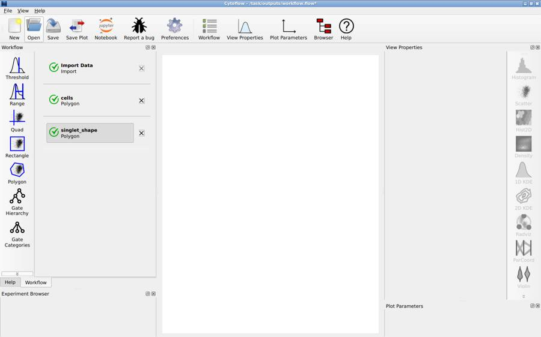
text(await tools.exec_command({cmd:"cu screenshot /tmp/screen.png","max_output_tokens":1000}));image((await tools.view_image({path:"/tmp/screen.png"})).image_url);
Script completed Wall time 0.1 seconds Output:
{"chunk_id":"3036cd","wall_time_seconds":0.0000032,"exit_code":0,"original_token_count":4,"output":"/tmp/screen.png\n"}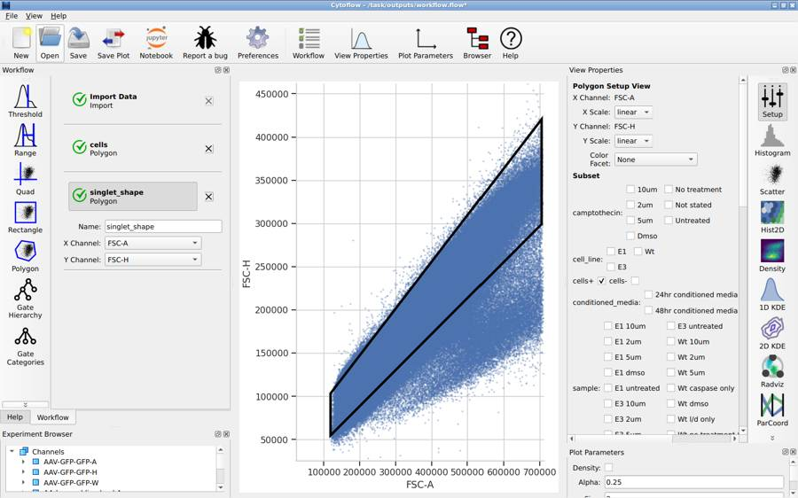
text(await tools.exec_command({cmd:"cu click 283 407 && cu key ctrl+a && cu type 'singlets' && cu key Tab && cu click 47 246","max_output_tokens":1000}));text(await tools.exec_command({cmd:"cu screenshot /tmp/screen.png","max_output_tokens":1000}));image((await tools.view_image({path:"/tmp/screen.png"})).image_url);
Script completed Wall time 0.6 seconds Output:
{"chunk_id":"6239e3","wall_time_seconds":0.318237477,"exit_code":0,"original_token_count":0,"output":""}{"chunk_id":"56ac32","wall_time_seconds":0.00000375,"exit_code":0,"original_token_count":4,"output":"/tmp/screen.png\n"}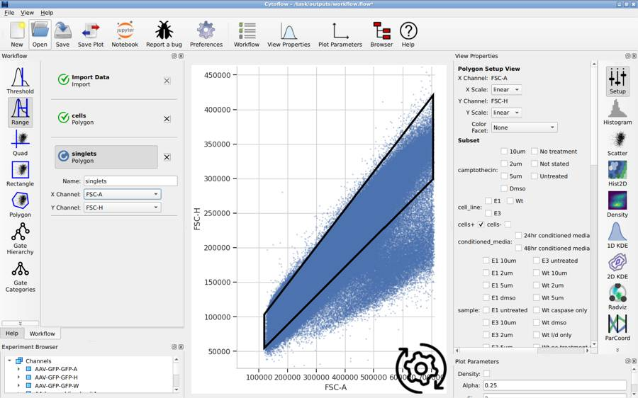
text(await tools.exec_command({cmd:"cu screenshot /tmp/screen.png","max_output_tokens":1000}));image((await tools.view_image({path:"/tmp/screen.png"})).image_url);
Script completed Wall time 0.1 seconds Output:
{"chunk_id":"919baa","wall_time_seconds":0.00000372,"exit_code":0,"original_token_count":4,"output":"/tmp/screen.png\n"}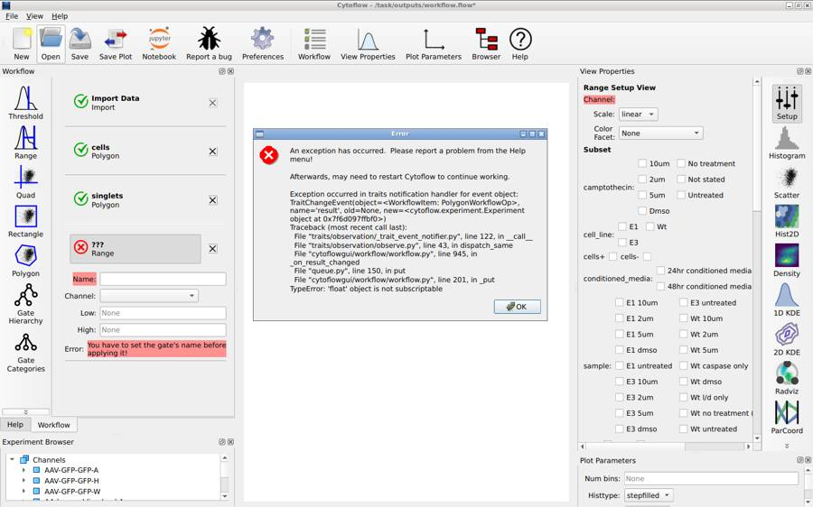
text(await tools.exec_command({cmd:"cu click 918 546 && cu click 280 495 && cu type 'live' && cu click 339 524 && cu key a && cu key Down && cu key Down && cu key Down && cu key Return && cu key ctrl+s","max_output_tokens":1000}));text(await tools.exec_command({cmd:"cu screenshot /tmp/screen.png","max_output_tokens":1000}));image((await tools.view_image({path:"/tmp/screen.png"})).image_url);
Script completed Wall time 0.7 seconds Output:
{"chunk_id":"931e30","wall_time_seconds":0.381341871,"exit_code":0,"original_token_count":0,"output":""}{"chunk_id":"609deb","wall_time_seconds":0.00000358,"exit_code":0,"original_token_count":4,"output":"/tmp/screen.png\n"}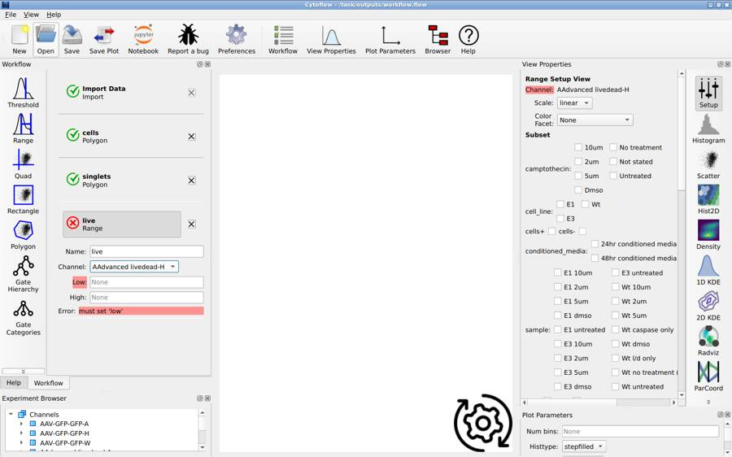
text(await tools.exec_command({cmd:"cu click 340 525 && cu key Up && cu key Return && cu click 1154 201 && cu key End && cu key Return && cu click 1086 455 && cu scroll 1264 720 down 3","max_output_tokens":1000}));text(await tools.exec_command({cmd:"cu screenshot /tmp/screen.png","max_output_tokens":1000}));image((await tools.view_image({path:"/tmp/screen.png"})).image_url);
Script completed Wall time 0.8 seconds Output:
{"chunk_id":"cae269","wall_time_seconds":0.543043554,"exit_code":0,"original_token_count":0,"output":""}{"chunk_id":"5a8131","wall_time_seconds":0.00000404,"exit_code":0,"original_token_count":4,"output":"/tmp/screen.png\n"}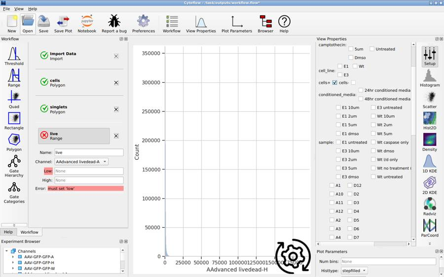
text(await tools.exec_command({cmd:"cu click 1210 546","max_output_tokens":1000}));text(await tools.exec_command({cmd:"cu screenshot /tmp/screen.png","max_output_tokens":1000}));image((await tools.view_image({path:"/tmp/screen.png"})).image_url);
Script completed Wall time 0.2 seconds Output:
{"chunk_id":"fb886e","wall_time_seconds":0.00000303,"exit_code":0,"original_token_count":0,"output":""}{"chunk_id":"fbbab6","wall_time_seconds":0.00000371,"exit_code":0,"original_token_count":4,"output":"/tmp/screen.png\n"}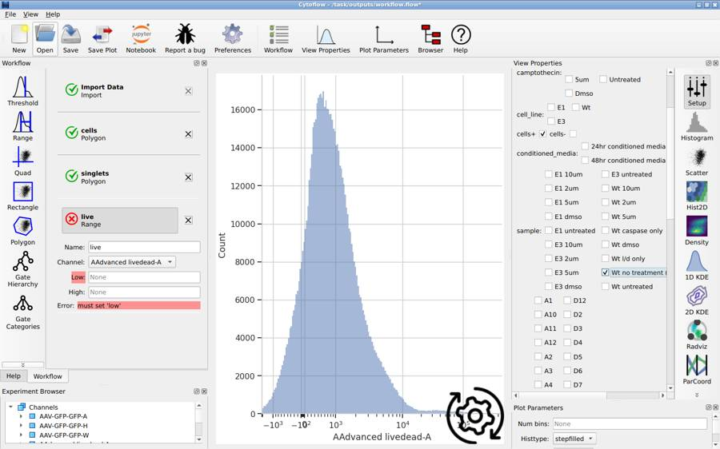
text(await tools.exec_command({cmd:"cu screenshot /tmp/screen.png","max_output_tokens":1000}));image((await tools.view_image({path:"/tmp/screen.png"})).image_url);
Script completed Wall time 0.1 seconds Output:
{"chunk_id":"305b31","wall_time_seconds":0.0000059,"exit_code":0,"original_token_count":4,"output":"/tmp/screen.png\n"}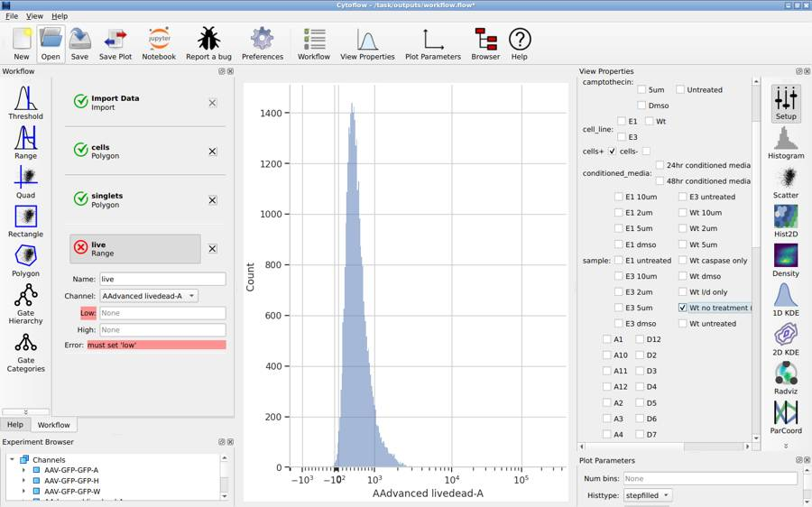
text(await tools.exec_command({cmd:"cu click 1210 546 && cu click 1210 518","max_output_tokens":1000}));text(await tools.exec_command({cmd:"cu screenshot /tmp/screen.png","max_output_tokens":1000}));image((await tools.view_image({path:"/tmp/screen.png"})).image_url);
Script completed Wall time 0.3 seconds Output:
{"chunk_id":"8d51d6","wall_time_seconds":0.066001502,"exit_code":0,"original_token_count":0,"output":""}{"chunk_id":"0542bb","wall_time_seconds":0.00000371,"exit_code":0,"original_token_count":4,"output":"/tmp/screen.png\n"}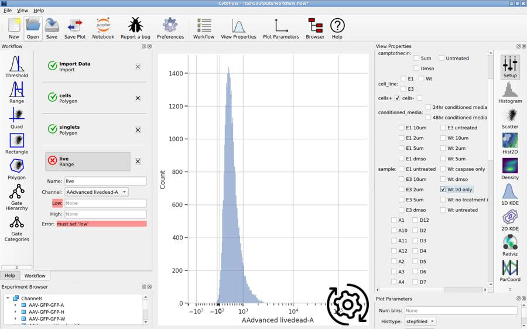
text(await tools.exec_command({cmd:"cu screenshot /tmp/screen.png","max_output_tokens":1000}));image((await tools.view_image({path:"/tmp/screen.png"})).image_url);
Script completed Wall time 0.1 seconds Output:
{"chunk_id":"61ea76","wall_time_seconds":0.000004,"exit_code":0,"original_token_count":4,"output":"/tmp/screen.png\n"}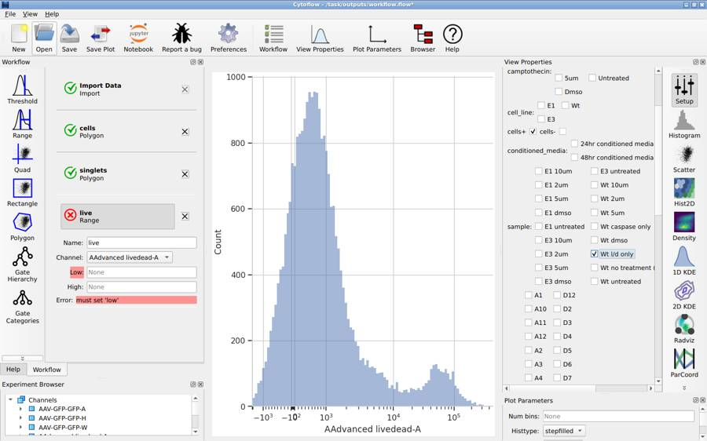
text(await tools.exec_command({cmd:"cu click 1210 518 && cu click 1210 461 && cu click 270 555 && cu key ctrl+a && cu type '-1000000' && cu click 270 585 && cu key ctrl+a && cu type '10000' && cu key Tab","max_output_tokens":1000}));text(await tools.exec_command({cmd:"cu screenshot /tmp/screen.png","max_output_tokens":1000}));image((await tools.view_image({path:"/tmp/screen.png"})).image_url);
Script completed Wall time 0.9 seconds Output:
{"chunk_id":"c1f030","wall_time_seconds":0.681045796,"exit_code":0,"original_token_count":0,"output":""}{"chunk_id":"5facea","wall_time_seconds":0.00000356,"exit_code":0,"original_token_count":4,"output":"/tmp/screen.png\n"}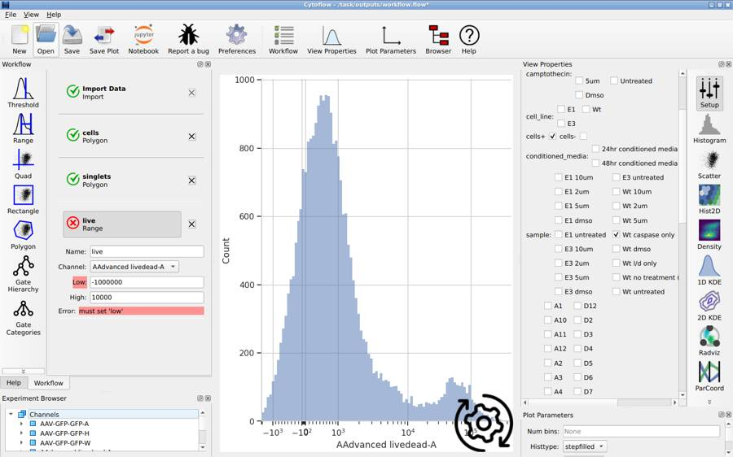
text(await tools.exec_command({cmd:"cu screenshot /tmp/screen.png","max_output_tokens":1000}));image((await tools.view_image({path:"/tmp/screen.png"})).image_url);
Script completed Wall time 0.1 seconds Output:
{"chunk_id":"72486e","wall_time_seconds":0.00000352,"exit_code":0,"original_token_count":4,"output":"/tmp/screen.png\n"}text(await tools.exec_command({cmd:"cu key ctrl+s && cu click 46 177","max_output_tokens":1000}));text(await tools.exec_command({cmd:"cu screenshot /tmp/screen.png","max_output_tokens":1000}));image((await tools.view_image({path:"/tmp/screen.png"})).image_url);
Script completed Wall time 0.3 seconds Output:
{"chunk_id":"e8a520","wall_time_seconds":0.0000028,"exit_code":0,"original_token_count":0,"output":""}{"chunk_id":"c40b0e","wall_time_seconds":0.000003739,"exit_code":0,"original_token_count":4,"output":"/tmp/screen.png\n"}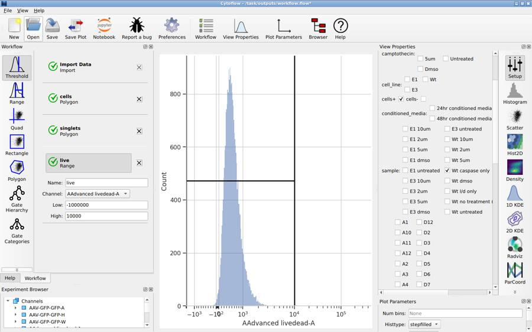
text(await tools.exec_command({cmd:"cu screenshot /tmp/screen.png","max_output_tokens":1000}));image((await tools.view_image({path:"/tmp/screen.png"})).image_url);
Script completed Wall time 0.1 seconds Output:
{"chunk_id":"c2768b","wall_time_seconds":0.00000414,"exit_code":0,"original_token_count":4,"output":"/tmp/screen.png\n"}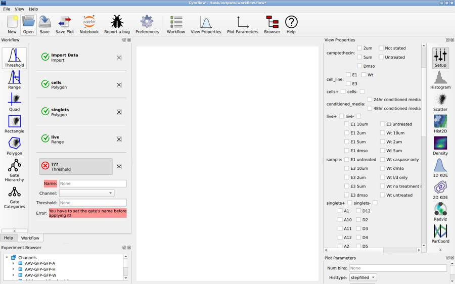
text(await tools.exec_command({cmd:"cu click 289 580 && cu key ctrl+a && cu type 'caspase_positive' && cu click 350 613 && cu key Home && cu key Return && cu click 1086 290 && cu click 1080 367 && cu click 1106 643 && cu click 1210 589 && cu scroll 1270 357 up 9","max_output_tokens":1000}));text(await tools.exec_command({cmd:"cu screenshot /tmp/screen.png","max_output_tokens":1000}));image((await tools.view_image({path:"/tmp/screen.png"})).image_url);
Script completed Wall time 2.1 seconds Output:
{"chunk_id":"250deb","wall_time_seconds":1.864039903,"exit_code":0,"original_token_count":0,"output":""}{"chunk_id":"cde5f4","wall_time_seconds":0.00000403,"exit_code":0,"original_token_count":4,"output":"/tmp/screen.png\n"}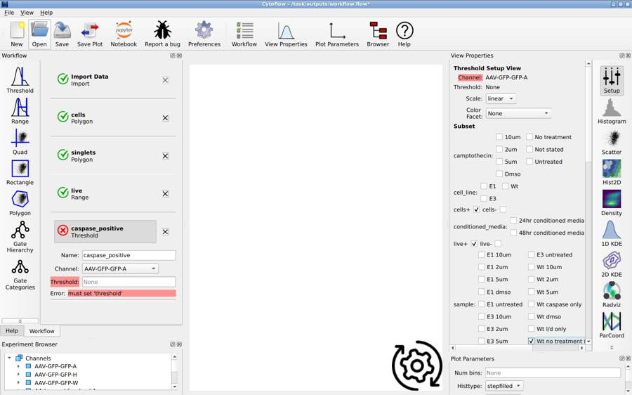
text(await tools.exec_command({cmd:"cu click 1164 225 && cu key End && cu key Return","max_output_tokens":1000}));text(await tools.exec_command({cmd:"cu screenshot /tmp/screen.png","max_output_tokens":1000}));image((await tools.view_image({path:"/tmp/screen.png"})).image_url);
Script completed Wall time 0.3 seconds Output:
{"chunk_id":"ab00d2","wall_time_seconds":0.00000342,"exit_code":0,"original_token_count":0,"output":""}{"chunk_id":"7b2c73","wall_time_seconds":0.00000385,"exit_code":0,"original_token_count":4,"output":"/tmp/screen.png\n"}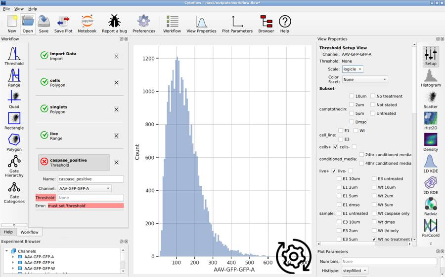
text(await tools.exec_command({cmd:"cu screenshot /tmp/screen.png","max_output_tokens":1000}));image((await tools.view_image({path:"/tmp/screen.png"})).image_url);
Script completed Wall time 0.1 seconds Output:
{"chunk_id":"f242c2","wall_time_seconds":0.00000338,"exit_code":0,"original_token_count":4,"output":"/tmp/screen.png\n"}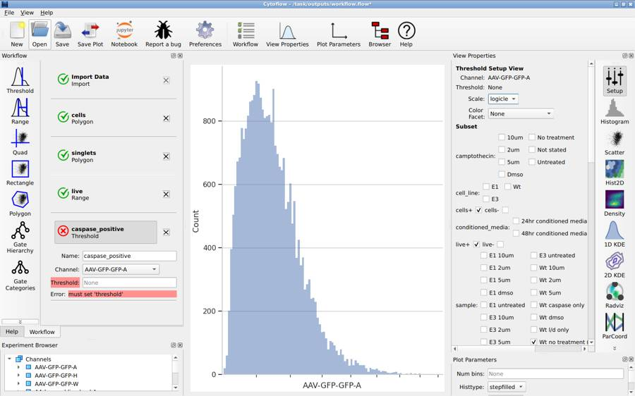
text(await tools.exec_command({cmd:"cu click 1210 776 && cu click 1210 748 && cu click 280 641 && cu key ctrl+a && cu type '1000' && cu key Tab","max_output_tokens":1000}));text(await tools.exec_command({cmd:"cu screenshot /tmp/screen.png","max_output_tokens":1000}));image((await tools.view_image({path:"/tmp/screen.png"})).image_url);
Script completed Wall time 0.6 seconds Output:
{"chunk_id":"9c108a","wall_time_seconds":0.316211699,"exit_code":0,"original_token_count":0,"output":""}{"chunk_id":"f21767","wall_time_seconds":0.00000388,"exit_code":0,"original_token_count":4,"output":"/tmp/screen.png\n"}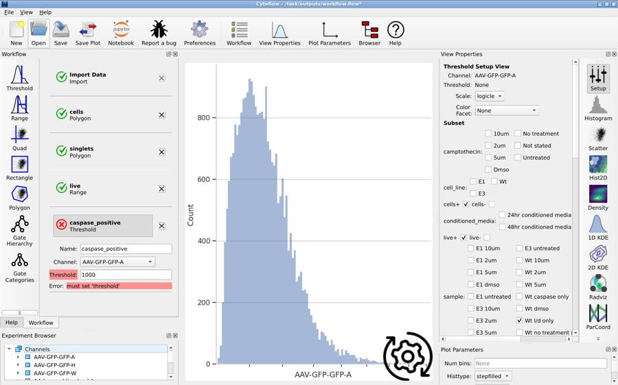
text(await tools.exec_command({cmd:"cu screenshot /tmp/screen.png","max_output_tokens":1000}));image((await tools.view_image({path:"/tmp/screen.png"})).image_url);
Script completed Wall time 0.1 seconds Output:
{"chunk_id":"62c2d0","wall_time_seconds":0.00000461,"exit_code":0,"original_token_count":4,"output":"/tmp/screen.png\n"}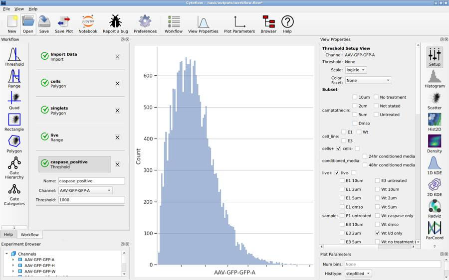
text(await tools.exec_command({cmd:"cu click 1210 748 && cu click 1210 693 && cu key ctrl+s","max_output_tokens":1000}));text(await tools.exec_command({cmd:"cu screenshot /tmp/screen.png","max_output_tokens":1000}));image((await tools.view_image({path:"/tmp/screen.png"})).image_url);
Script completed Wall time 0.4 seconds Output:
{"chunk_id":"a051cf","wall_time_seconds":0.092182722,"exit_code":0,"original_token_count":0,"output":""}{"chunk_id":"2fca9a","wall_time_seconds":0.00000359,"exit_code":0,"original_token_count":4,"output":"/tmp/screen.png\n"}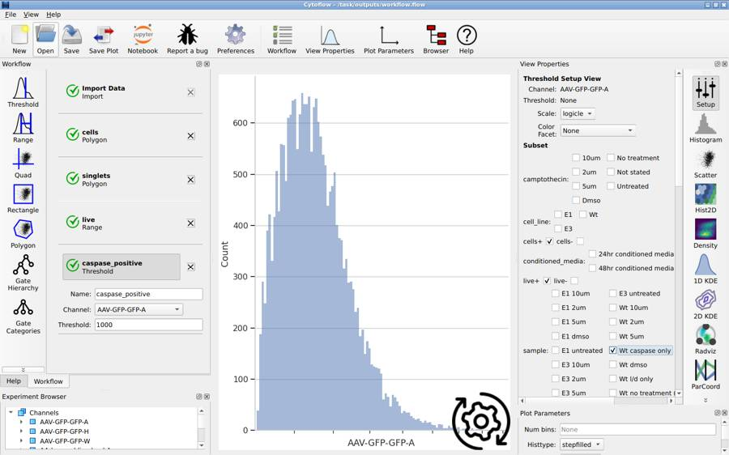
text(await tools.exec_command({cmd:"cu screenshot /tmp/screen.png","max_output_tokens":1000}));image((await tools.view_image({path:"/tmp/screen.png"})).image_url);
Script completed Wall time 0.1 seconds Output:
{"chunk_id":"d2c0fc","wall_time_seconds":0.00000319,"exit_code":0,"original_token_count":4,"output":"/tmp/screen.png\n"}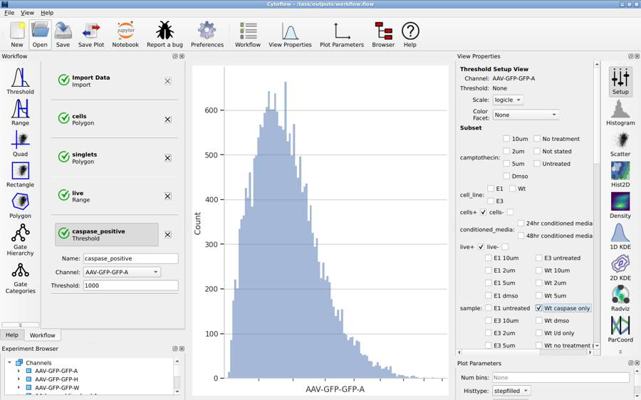
text(await tools.exec_command({cmd:"cu click 1210 693","max_output_tokens":1000}));text(await tools.exec_command({cmd:"cu screenshot /tmp/screen.png","max_output_tokens":1000}));image((await tools.view_image({path:"/tmp/screen.png"})).image_url);
Script completed Wall time 0.2 seconds Output:
{"chunk_id":"e0968c","wall_time_seconds":0.00000279,"exit_code":0,"original_token_count":0,"output":""}{"chunk_id":"6ba016","wall_time_seconds":0.00000307,"exit_code":0,"original_token_count":4,"output":"/tmp/screen.png\n"}text(await tools.exec_command({cmd:"cu screenshot /tmp/screen.png","max_output_tokens":1000}));image((await tools.view_image({path:"/tmp/screen.png"})).image_url);
Script completed Wall time 0.1 seconds Output:
{"chunk_id":"2a5e1d","wall_time_seconds":0.00000409,"exit_code":0,"original_token_count":4,"output":"/tmp/screen.png\n"}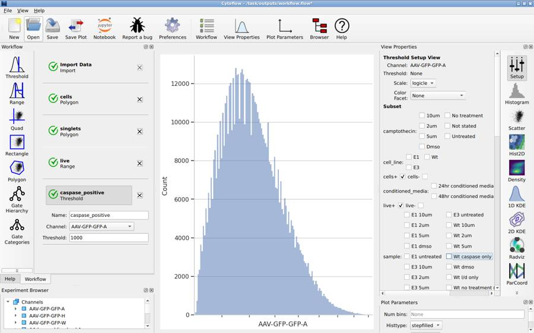
text(await tools.exec_command({cmd:"cu click 1166 224 && cu key Home && cu key Return","max_output_tokens":1000}));text(await tools.exec_command({cmd:"cu screenshot /tmp/screen.png","max_output_tokens":1000}));image((await tools.view_image({path:"/tmp/screen.png"})).image_url);
Script completed Wall time 0.3 seconds Output:
{"chunk_id":"69920d","wall_time_seconds":0.00000327,"exit_code":0,"original_token_count":0,"output":""}{"chunk_id":"7ad1a3","wall_time_seconds":0.0000037,"exit_code":0,"original_token_count":4,"output":"/tmp/screen.png\n"}text(await tools.exec_command({cmd:"cu screenshot /tmp/screen.png","max_output_tokens":1000}));image((await tools.view_image({path:"/tmp/screen.png"})).image_url);
Script completed Wall time 0.1 seconds Output:
{"chunk_id":"a7fae4","wall_time_seconds":0.0000038,"exit_code":0,"original_token_count":4,"output":"/tmp/screen.png\n"}text(await tools.exec_command({cmd:"cu click 46 730","max_output_tokens":1000}));text(await tools.exec_command({cmd:"cu screenshot /tmp/screen.png","max_output_tokens":1000}));image((await tools.view_image({path:"/tmp/screen.png"})).image_url);
Script completed Wall time 0.2 seconds Output:
{"chunk_id":"2e563f","wall_time_seconds":0.00000333,"exit_code":0,"original_token_count":0,"output":""}{"chunk_id":"6c770c","wall_time_seconds":0.00000323,"exit_code":0,"original_token_count":4,"output":"/tmp/screen.png\n"}text(await tools.exec_command({cmd:"cu screenshot /tmp/screen.png","max_output_tokens":1000}));image((await tools.view_image({path:"/tmp/screen.png"})).image_url);
Script completed Wall time 0.1 seconds Output:
{"chunk_id":"bef0e6","wall_time_seconds":0.00000371,"exit_code":0,"original_token_count":4,"output":"/tmp/screen.png\n"}text(await tools.exec_command({cmd:"cu click 131 174","max_output_tokens":1000}));text(await tools.exec_command({cmd:"cu screenshot /tmp/screen.png","max_output_tokens":1000}));image((await tools.view_image({path:"/tmp/screen.png"})).image_url);
Script completed Wall time 0.3 seconds Output:
{"chunk_id":"9d9464","wall_time_seconds":0.00000308,"exit_code":0,"original_token_count":0,"output":""}{"chunk_id":"18d159","wall_time_seconds":0.00000328,"exit_code":0,"original_token_count":4,"output":"/tmp/screen.png\n"}text(await tools.exec_command({cmd:"cu screenshot /tmp/screen.png","max_output_tokens":1000}));image((await tools.view_image({path:"/tmp/screen.png"})).image_url);
Script completed Wall time 0.1 seconds Output:
{"chunk_id":"1f36e8","wall_time_seconds":0.00000348,"exit_code":0,"original_token_count":4,"output":"/tmp/screen.png\n"}text(await tools.exec_command({cmd:"cu click 421 744 && cu scroll 376 650 down 6","max_output_tokens":1000}));text(await tools.exec_command({cmd:"cu screenshot /tmp/screen.png","max_output_tokens":1000}));image((await tools.view_image({path:"/tmp/screen.png"})).image_url);
Script completed Wall time 0.8 seconds Output:
{"chunk_id":"141ee1","wall_time_seconds":0.563765025,"exit_code":0,"original_token_count":0,"output":""}{"chunk_id":"5f346c","wall_time_seconds":0.00000371,"exit_code":0,"original_token_count":4,"output":"/tmp/screen.png\n"}text(await tools.exec_command({cmd:"cu drag 419 454 570 454 && cu click 275 293 && cu key ctrl+a && cu type 'gate_counts' && cu click 341 324 && cu key f && cu key Return && cu click 320 353","max_output_tokens":1000}));text(await tools.exec_command({cmd:"cu screenshot /tmp/screen.png","max_output_tokens":1000}));image((await tools.view_image({path:"/tmp/screen.png"})).image_url);
Script completed Wall time 0.8 seconds Output:
{"chunk_id":"20e7aa","wall_time_seconds":0.545225932,"exit_code":0,"original_token_count":0,"output":""}{"chunk_id":"a55d62","wall_time_seconds":0.00000407,"exit_code":0,"original_token_count":4,"output":"/tmp/screen.png\n"}text(await tools.exec_command({cmd:"cu click 213 353 && cu click 394 465 && cu click 1396 791","max_output_tokens":1000}));text(await tools.exec_command({cmd:"cu screenshot /tmp/screen.png","max_output_tokens":1000}));image((await tools.view_image({path:"/tmp/screen.png"})).image_url);
Script completed Wall time 0.4 seconds Output:
{"chunk_id":"a54042","wall_time_seconds":0.169728039,"exit_code":0,"original_token_count":0,"output":""}{"chunk_id":"e80714","wall_time_seconds":0.00000388,"exit_code":0,"original_token_count":4,"output":"/tmp/screen.png\n"}text(await tools.exec_command({cmd:"cu click 1394 790","max_output_tokens":1000}));text(await tools.exec_command({cmd:"cu screenshot /tmp/screen.png","max_output_tokens":1000}));image((await tools.view_image({path:"/tmp/screen.png"})).image_url);
Script completed Wall time 0.2 seconds Output:
{"chunk_id":"32d11d","wall_time_seconds":0.00000286,"exit_code":0,"original_token_count":0,"output":""}{"chunk_id":"2e83c3","wall_time_seconds":0.00000349,"exit_code":0,"original_token_count":4,"output":"/tmp/screen.png\n"}text(await tools.exec_command({cmd:"cu click 1387 792","max_output_tokens":1000}));text(await tools.exec_command({cmd:"cu screenshot /tmp/screen.png","max_output_tokens":1000}));image((await tools.view_image({path:"/tmp/screen.png"})).image_url);
Script completed Wall time 0.2 seconds Output:
{"chunk_id":"384c87","wall_time_seconds":0.00000325,"exit_code":0,"original_token_count":0,"output":""}{"chunk_id":"450392","wall_time_seconds":0.00000442,"exit_code":0,"original_token_count":4,"output":"/tmp/screen.png\n"}text(await tools.exec_command({cmd:"cu click 1387 790 && cu key End","max_output_tokens":1000}));text(await tools.exec_command({cmd:"cu screenshot /tmp/screen.png","max_output_tokens":1000}));image((await tools.view_image({path:"/tmp/screen.png"})).image_url);
Script completed Wall time 0.3 seconds Output:
{"chunk_id":"40a894","wall_time_seconds":0.00000358,"exit_code":0,"original_token_count":0,"output":""}{"chunk_id":"d1c32f","wall_time_seconds":0.0000038,"exit_code":0,"original_token_count":4,"output":"/tmp/screen.png\n"}text(await tools.exec_command({cmd:"cu drag 1387 144 923 215","max_output_tokens":1000}));text(await tools.exec_command({cmd:"cu screenshot /tmp/screen.png","max_output_tokens":1000}));image((await tools.view_image({path:"/tmp/screen.png"})).image_url);
Script completed Wall time 0.2 seconds Output:
{"chunk_id":"992c0e","wall_time_seconds":0.00000327,"exit_code":0,"original_token_count":0,"output":""}{"chunk_id":"c64398","wall_time_seconds":0.00000347,"exit_code":0,"original_token_count":4,"output":"/tmp/screen.png\n"}text(await tools.exec_command({cmd:"cu drag 900 248 28 248","max_output_tokens":1000}));text(await tools.exec_command({cmd:"cu screenshot /tmp/screen.png","max_output_tokens":1000}));image((await tools.view_image({path:"/tmp/screen.png"})).image_url);
Script completed Wall time 0.1 seconds Output:
{"chunk_id":"43c69c","wall_time_seconds":0.00000283,"exit_code":0,"original_token_count":0,"output":""}{"chunk_id":"2a142f","wall_time_seconds":0.00000403,"exit_code":0,"original_token_count":4,"output":"/tmp/screen.png\n"}text(await tools.exec_command({cmd:"cu click 1429 182","max_output_tokens":1000}));text(await tools.exec_command({cmd:"cu screenshot /tmp/screen.png","max_output_tokens":1000}));image((await tools.view_image({path:"/tmp/screen.png"})).image_url);
Script completed Wall time 0.2 seconds Output:
{"chunk_id":"e0f6f8","wall_time_seconds":0.00000302,"exit_code":0,"original_token_count":0,"output":""}{"chunk_id":"3a143f","wall_time_seconds":0.00000372,"exit_code":0,"original_token_count":4,"output":"/tmp/screen.png\n"}text(await tools.exec_command({cmd:"cu screenshot /tmp/screen.png","max_output_tokens":1000}));image((await tools.view_image({path:"/tmp/screen.png"})).image_url);
Script completed Wall time 0.1 seconds Output:
{"chunk_id":"af64aa","wall_time_seconds":0.00000313,"exit_code":0,"original_token_count":4,"output":"/tmp/screen.png\n"}text(await tools.exec_command({cmd:"cu click 1240 312 && cu click 610 126","max_output_tokens":1000}));text(await tools.exec_command({cmd:"cu screenshot /tmp/screen.png","max_output_tokens":1000}));image((await tools.view_image({path:"/tmp/screen.png"})).image_url);
Script completed Wall time 0.3 seconds Output:
{"chunk_id":"e4a3b9","wall_time_seconds":0.065705533,"exit_code":0,"original_token_count":0,"output":""}{"chunk_id":"ace003","wall_time_seconds":0.00000406,"exit_code":0,"original_token_count":4,"output":"/tmp/screen.png\n"}text(await tools.exec_command({cmd:"cu screenshot /tmp/screen.png","max_output_tokens":1000}));image((await tools.view_image({path:"/tmp/screen.png"})).image_url);
Script completed Wall time 0.1 seconds Output:
{"chunk_id":"9a04c5","wall_time_seconds":0.00000408,"exit_code":0,"original_token_count":4,"output":"/tmp/screen.png\n"}text(await tools.exec_command({cmd:"cu click 1210 272 && cu key End && cu key Return && cu click 1184 303 && cu key End && cu key Return && cu click 1165 333 && cu key End && cu key Return","max_output_tokens":1000}));text(await tools.exec_command({cmd:"cu screenshot /tmp/screen.png","max_output_tokens":1000}));image((await tools.view_image({path:"/tmp/screen.png"})).image_url);
Script completed Wall time 0.5 seconds Output:
{"chunk_id":"91810f","wall_time_seconds":0.260084372,"exit_code":0,"original_token_count":0,"output":""}{"chunk_id":"d74be3","wall_time_seconds":0.00000358,"exit_code":0,"original_token_count":4,"output":"/tmp/screen.png\n"}text(await tools.exec_command({cmd:"cu click 1164 333","max_output_tokens":1000}));text(await tools.exec_command({cmd:"cu screenshot /tmp/screen.png","max_output_tokens":1000}));image((await tools.view_image({path:"/tmp/screen.png"})).image_url);
Script completed Wall time 0.2 seconds Output:
{"chunk_id":"c92548","wall_time_seconds":0.0000035,"exit_code":0,"original_token_count":0,"output":""}{"chunk_id":"b4adeb","wall_time_seconds":0.00000331,"exit_code":0,"original_token_count":4,"output":"/tmp/screen.png\n"}text(await tools.exec_command({cmd:"cu click 1138 310","max_output_tokens":1000}));text(await tools.exec_command({cmd:"cu screenshot /tmp/screen.png","max_output_tokens":1000}));image((await tools.view_image({path:"/tmp/screen.png"})).image_url);
Script completed Wall time 0.2 seconds Output:
{"chunk_id":"566322","wall_time_seconds":0.00000325,"exit_code":0,"original_token_count":0,"output":""}{"chunk_id":"5ccae1","wall_time_seconds":0.00000392,"exit_code":0,"original_token_count":4,"output":"/tmp/screen.png\n"}text(await tools.exec_command({cmd:"mkdir -p /task/outputs/gui_exports && cu click 1267 485","max_output_tokens":1000}));text(await tools.exec_command({cmd:"cu screenshot /tmp/screen.png","max_output_tokens":1000}));image((await tools.view_image({path:"/tmp/screen.png"})).image_url);
Script completed Wall time 0.2 seconds Output:
{"chunk_id":"011bc2","wall_time_seconds":0.00000325,"exit_code":0,"original_token_count":0,"output":""}{"chunk_id":"d4f824","wall_time_seconds":0.00000411,"exit_code":0,"original_token_count":4,"output":"/tmp/screen.png\n"}text(await tools.exec_command({cmd:"cu paste '/task/outputs/gui_exports/all_events.csv' && cu key Return","max_output_tokens":1000}));text(await tools.exec_command({cmd:"cu screenshot /tmp/screen.png","max_output_tokens":1000}));image((await tools.view_image({path:"/tmp/screen.png"})).image_url);
text(await tools.exec_command({cmd:"cat /task/outputs/gui_exports/all_events.csv","max_output_tokens":4000}));
Script completed Wall time 1.5 seconds Output:
{"chunk_id":"747855","wall_time_seconds":1.195451391,"exit_code":0,"original_token_count":0,"output":""}{"chunk_id":"502d63","wall_time_seconds":0.00000341,"exit_code":0,"original_token_count":4,"output":"/tmp/screen.png\n"}{"chunk_id":"add831","wall_time_seconds":0.00000409,"exit_code":1,"original_token_count":19,"output":"cat: /task/outputs/gui_exports/all_events.csv: No such file or directory\n"}text(await tools.exec_command({cmd:"cu click 921 483 && cu key ctrl+s && cu key ctrl+o","max_output_tokens":1000}));text(await tools.exec_command({cmd:"cu screenshot /tmp/screen.png","max_output_tokens":1000}));image((await tools.view_image({path:"/tmp/screen.png"})).image_url);
Script completed Wall time 0.3 seconds Output:
{"chunk_id":"2e711a","wall_time_seconds":0.015654933,"exit_code":0,"original_token_count":0,"output":""}{"chunk_id":"d5cb26","wall_time_seconds":0.00000364,"exit_code":0,"original_token_count":4,"output":"/tmp/screen.png\n"}text(await tools.exec_command({cmd:"cu paste '/task/outputs/workflow.flow' && cu key Return","max_output_tokens":1000}));text(await tools.exec_command({cmd:"cu screenshot /tmp/screen.png","max_output_tokens":1000}));image((await tools.view_image({path:"/tmp/screen.png"})).image_url);
text(await tools.clock__curr_time({}));
Script completed Wall time 1.5 seconds Output:
{"chunk_id":"5a11ac","wall_time_seconds":1.198923761,"exit_code":0,"original_token_count":0,"output":""}{"chunk_id":"1de3ff","wall_time_seconds":0.00000358,"exit_code":0,"original_token_count":4,"output":"/tmp/screen.png\n"}{"current_time":"2026-11-06 00:42:15 UTC"}text(await tools.exec_command({cmd:"cu click 979 578 && sleep 1 && cu screenshot /tmp/screen.png","max_output_tokens":1000}));image((await tools.view_image({path:"/tmp/screen.png"})).image_url);
Script completed Wall time 1.2 seconds Output:
{"chunk_id":"9103c9","wall_time_seconds":1.011185769,"exit_code":0,"original_token_count":4,"output":"/tmp/screen.png\n"}text(await tools.exec_command({cmd:"cu click 739 427 && sleep 15 && cu screenshot /tmp/screen.png","max_output_tokens":1000}));image((await tools.view_image({path:"/tmp/screen.png"})).image_url);
Script completed Wall time 10.2 seconds Output:
{"chunk_id":"d85ca0","wall_time_seconds":10.001542252,"session_id":37550,"original_token_count":0,"output":""}text(await tools.write_stdin({session_id:37550,chars:"","yield_time_ms":10000,"max_output_tokens":1000}));image((await tools.view_image({path:"/tmp/screen.png"})).image_url);
Script completed Wall time 0.0 seconds Output:
{"chunk_id":"86fb54","wall_time_seconds":0.00000317,"exit_code":0,"original_token_count":4,"output":"/tmp/screen.png\n"}text(await tools.exec_command({cmd:"cu click 305 612 && sleep 2 && cu screenshot /tmp/screen.png","max_output_tokens":1000}));image((await tools.view_image({path:"/tmp/screen.png"})).image_url);
Script completed Wall time 2.2 seconds Output:
{"chunk_id":"0b8a6c","wall_time_seconds":2.013740611,"exit_code":0,"original_token_count":4,"output":"/tmp/screen.png\n"}text(await tools.exec_command({cmd:"cu scroll 1327 733 down 32 && sleep 1 && cu screenshot /tmp/screen.png","max_output_tokens":1000}));image((await tools.view_image({path:"/tmp/screen.png"})).image_url);
Script completed Wall time 4.3 seconds Output:
{"chunk_id":"ea09c0","wall_time_seconds":4.117782494,"exit_code":0,"original_token_count":4,"output":"/tmp/screen.png\n"}text(await tools.exec_command({cmd:"cu click 1429 182 && sleep 1 && cu screenshot /tmp/screen.png","max_output_tokens":1000}));image((await tools.view_image({path:"/tmp/screen.png"})).image_url);
Script completed Wall time 1.2 seconds Output:
{"chunk_id":"70618c","wall_time_seconds":1.014601147,"exit_code":0,"original_token_count":4,"output":"/tmp/screen.png\n"}text(await tools.exec_command({cmd:"cu click 1294 312 && cu click 1017 245 && sleep 1 && cu screenshot /tmp/screen.png","max_output_tokens":1000}));image((await tools.view_image({path:"/tmp/screen.png"})).image_url);
Script completed Wall time 1.3 seconds Output:
{"chunk_id":"7b9ee4","wall_time_seconds":1.117297364,"exit_code":0,"original_token_count":4,"output":"/tmp/screen.png\n"}text(await tools.exec_command({cmd:"cu click 1190 272 && cu key Home && cu key Return && sleep 1 && cu screenshot /tmp/screen.png","max_output_tokens":1000}));image((await tools.view_image({path:"/tmp/screen.png"})).image_url);
Script completed Wall time 1.2 seconds Output:
{"chunk_id":"cb90fd","wall_time_seconds":1.046172734,"exit_code":0,"original_token_count":4,"output":"/tmp/screen.png\n"}text(await tools.exec_command({cmd:"cu click 1191 272 && cu key End && cu key Return && sleep 2 && cu screenshot /tmp/screen.png","max_output_tokens":1000}));image((await tools.view_image({path:"/tmp/screen.png"})).image_url);
Script completed Wall time 2.2 seconds Output:
{"chunk_id":"14948c","wall_time_seconds":2.046403807,"exit_code":0,"original_token_count":4,"output":"/tmp/screen.png\n"}text(await tools.exec_command({cmd:"cu click 1153 302 && sleep 1 && cu screenshot /tmp/screen.png","max_output_tokens":1000}));image((await tools.view_image({path:"/tmp/screen.png"})).image_url);
Script completed Wall time 1.2 seconds Output:
{"chunk_id":"40321e","wall_time_seconds":1.019000485,"exit_code":0,"original_token_count":4,"output":"/tmp/screen.png\n"}text(await tools.exec_command({cmd:"cu paste '/task/outputs/gui_exports/all_events.csv' && sleep 1 && cu click 978 568 && sleep 1 && cu screenshot /tmp/screen.png","max_output_tokens":1000}));image((await tools.view_image({path:"/tmp/screen.png"})).image_url);
text(await tools.exec_command({cmd:"cat /task/outputs/gui_exports/all_events.csv","max_output_tokens":3000}));
Script completed Wall time 3.6 seconds Output:
{"chunk_id":"89a4bd","wall_time_seconds":3.349632455,"exit_code":0,"original_token_count":4,"output":"/tmp/screen.png\n"}{"chunk_id":"afd02e","wall_time_seconds":0.00000338,"exit_code":1,"original_token_count":19,"output":"cat: /task/outputs/gui_exports/all_events.csv: No such file or directory\n"}text(await tools.exec_command({cmd:"cu click 950 469 && cu scroll 490 659 down 6 && sleep 1 && cu screenshot /tmp/screen.png","max_output_tokens":1000}));image((await tools.view_image({path:"/tmp/screen.png"})).image_url);
Script completed Wall time 1.8 seconds Output:
{"chunk_id":"fae45f","wall_time_seconds":1.6232585240000001,"exit_code":0,"original_token_count":4,"output":"/tmp/screen.png\n"}text(await tools.exec_command({cmd:"cu click 185 439 && sleep 2 && cu screenshot /tmp/screen.png","max_output_tokens":1000}));image((await tools.view_image({path:"/tmp/screen.png"})).image_url);
Script completed Wall time 2.2 seconds Output:
{"chunk_id":"38404a","wall_time_seconds":2.01542144,"exit_code":0,"original_token_count":4,"output":"/tmp/screen.png\n"}text(await tools.exec_command({cmd:"cu scroll 1335 714 down 25 && sleep 1 && cu screenshot /tmp/screen.png","max_output_tokens":1000}));image((await tools.view_image({path:"/tmp/screen.png"})).image_url);
Script completed Wall time 3.6 seconds Output:
{"chunk_id":"eaffe6","wall_time_seconds":3.416787006,"exit_code":0,"original_token_count":4,"output":"/tmp/screen.png\n"}text(await tools.exec_command({cmd:"cu click 185 438 && cu click 1429 182 && sleep 1 && cu screenshot /tmp/screen.png","max_output_tokens":1000}));image((await tools.view_image({path:"/tmp/screen.png"})).image_url);
Script completed Wall time 1.3 seconds Output:
{"chunk_id":"f2f3fe","wall_time_seconds":1.120141413,"exit_code":0,"original_token_count":4,"output":"/tmp/screen.png\n"}text(await tools.exec_command({cmd:"cu click 1244 312 && cu click 1016 245 && cu scroll 1332 400 up 30 && sleep 1 && cu screenshot /tmp/screen.png","max_output_tokens":1000}));image((await tools.view_image({path:"/tmp/screen.png"})).image_url);
Script completed Wall time 4.3 seconds Output:
{"chunk_id":"e55074","wall_time_seconds":4.12884818,"exit_code":0,"original_token_count":4,"output":"/tmp/screen.png\n"}text(await tools.exec_command({cmd:"cu click 1164 333 && cu key End && cu key Return && cu click 1165 393 && cu key Home && cu key Return && sleep 1 && cu screenshot /tmp/screen.png","max_output_tokens":1000}));image((await tools.view_image({path:"/tmp/screen.png"})).image_url);
Script completed Wall time 1.4 seconds Output:
{"chunk_id":"50f02f","wall_time_seconds":1.184180537,"exit_code":0,"original_token_count":4,"output":"/tmp/screen.png\n"}text(await tools.exec_command({cmd:"sleep 2 && cu screenshot /tmp/screen.png","max_output_tokens":1000}));image((await tools.view_image({path:"/tmp/screen.png"})).image_url);
Script completed Wall time 2.1 seconds Output:
{"chunk_id":"cbab6b","wall_time_seconds":1.9095728539999999,"exit_code":0,"original_token_count":4,"output":"/tmp/screen.png\n"}text(await tools.exec_command({cmd:"cu click 1077 535 && sleep 2 && cu screenshot /tmp/screen.png","max_output_tokens":1000}));image((await tools.view_image({path:"/tmp/screen.png"})).image_url);
Script completed Wall time 2.2 seconds Output:
{"chunk_id":"0d69e9","wall_time_seconds":2.018454439,"exit_code":0,"original_token_count":4,"output":"/tmp/screen.png\n"}text(await tools.exec_command({cmd:"cu click 917 500 && cu click 1077 563 && sleep 2 && cu screenshot /tmp/screen.png","max_output_tokens":1000}));image((await tools.view_image({path:"/tmp/screen.png"})).image_url);
Script completed Wall time 2.3 seconds Output:
{"chunk_id":"3186ad","wall_time_seconds":2.122093476,"exit_code":0,"original_token_count":4,"output":"/tmp/screen.png\n"}text(await tools.exec_command({cmd:"cu click 1076 534 && cu click 1076 563 && sleep 2 && cu click 1267 483 && sleep 1 && cu screenshot /tmp/screen.png","max_output_tokens":1000}));image((await tools.view_image({path:"/tmp/screen.png"})).image_url);
Script completed Wall time 3.4 seconds Output:
{"chunk_id":"52495c","wall_time_seconds":3.234236392,"exit_code":0,"original_token_count":4,"output":"/tmp/screen.png\n"}text(await tools.exec_command({cmd:"cu paste '/task/outputs/gui_exports/all_events.csv' && sleep 1 && cu click 980 568 && sleep 1 && cu screenshot /tmp/screen.png","max_output_tokens":1000}));image((await tools.view_image({path:"/tmp/screen.png"})).image_url);
text(await tools.exec_command({cmd:"cat /task/outputs/gui_exports/all_events.csv","max_output_tokens":3000}));
Script completed Wall time 3.6 seconds Output:
{"chunk_id":"a1593e","wall_time_seconds":3.349613364,"exit_code":0,"original_token_count":4,"output":"/tmp/screen.png\n"}{"chunk_id":"5162bd","wall_time_seconds":0.00000349,"exit_code":1,"original_token_count":19,"output":"cat: /task/outputs/gui_exports/all_events.csv: No such file or directory\n"}text(await tools.exec_command({cmd:"cu click 921 482 && cu click 1076 535 && cu click 1076 563 && sleep 2 && cu click 1265 485 && sleep 1 && cu paste '/task/outputs/gui_exports/test_two.csv' && sleep 1 && cu click 980 568 && sleep 1 && cu screenshot /tmp/screen.png","max_output_tokens":1000}));image((await tools.view_image({path:"/tmp/screen.png"})).image_url);
text(await tools.exec_command({cmd:"cat /task/outputs/gui_exports/test_two.csv","max_output_tokens":1000}));
Script completed Wall time 7.0 seconds Output:
{"chunk_id":"e988cb","wall_time_seconds":6.773506977,"exit_code":0,"original_token_count":4,"output":"/tmp/screen.png\n"}{"chunk_id":"e3f3a3","wall_time_seconds":0.0000028,"exit_code":1,"original_token_count":18,"output":"cat: /task/outputs/gui_exports/test_two.csv: No such file or directory\n"}text(await tools.exec_command({cmd:"cu click 918 499 && cu click 1076 563 && sleep 1 && cu click 1265 485 && sleep 1 && cu paste '/task/outputs/gui_exports/test_two.csv' && sleep 1 && cu click 980 568 && sleep 1 && cu screenshot /tmp/screen.png","max_output_tokens":1000}));image((await tools.view_image({path:"/tmp/screen.png"})).image_url);
text(await tools.exec_command({cmd:"cat /task/outputs/gui_exports/test_two.csv","max_output_tokens":1000}));
Script completed Wall time 5.9 seconds Output:
{"chunk_id":"6097b1","wall_time_seconds":5.666566959,"exit_code":0,"original_token_count":4,"output":"/tmp/screen.png\n"}{"chunk_id":"2d259a","wall_time_seconds":0.00000304,"exit_code":1,"original_token_count":18,"output":"cat: /task/outputs/gui_exports/test_two.csv: No such file or directory\n"}text(await tools.exec_command({cmd:"ls -ld /task/outputs /task/outputs/gui_exports /task/outputs/workflow.flow","max_output_tokens":1000}));
Script completed
Wall time 0.0 seconds
Output:
{"chunk_id":"f2a823","wall_time_seconds":0.00000311,"exit_code":0,"original_token_count":50,"output":"drwxrwsrwx 3 agent task 4096 Nov 6 00:41 /task/outputs\ndrwxr-sr-x 2 root task 4096 Nov 6 00:41 /task/outputs/gui_exports\n-rw-rw-r-- 1 cfapp task 137820 Nov 6 00:42 /task/outputs/workflow.flow\n"}text(await tools.exec_command({cmd:"chmod g+w /task/outputs/gui_exports && cu click 919 483 && cu click 1076 535 && cu click 1076 563 && sleep 1 && cu screenshot /tmp/screen.png","max_output_tokens":1000}));image((await tools.view_image({path:"/tmp/screen.png"})).image_url);
Script completed Wall time 1.4 seconds Output:
{"chunk_id":"0e7cdd","wall_time_seconds":1.228046308,"exit_code":0,"original_token_count":4,"output":"/tmp/screen.png\n"}text(await tools.exec_command({cmd:"cu click 919 499 && cu click 1076 563 && sleep 1 && cu click 1264 484 && sleep 1 && cu paste '/task/outputs/gui_exports/all_events.csv' && sleep 1 && cu click 980 568 && sleep 1 && cu screenshot /tmp/screen.png","max_output_tokens":1000}));image((await tools.view_image({path:"/tmp/screen.png"})).image_url);
text(await tools.exec_command({cmd:"cat /task/outputs/gui_exports/all_events.csv","max_output_tokens":3000}));
Script completed Wall time 5.9 seconds Output:
{"chunk_id":"2514c5","wall_time_seconds":5.666686609,"exit_code":0,"original_token_count":4,"output":"/tmp/screen.png\n"}{"chunk_id":"8a5c43","wall_time_seconds":0.00000361,"exit_code":0,"original_token_count":348,"output":"well = A1,well = A10,well = A11,well = A12,well = A2,well = A3,well = A4,well = A5,well = A6,well = A7,well = A8,well = A9,well = B1,well = B10,well = B11,well = B12,well = B2,well = B3,well = B4,well = B5,well = B6,well = B7,well = B8,well = B9,well = C1,well = C10,well = C11,well = C12,well = C2,well = C3,well = C4,well = C5,well = C6,well = C7,well = C8,well = C9,well = D1,well = D10,well = D11,well = D12,well = D2,well = D3,well = D4,well = D5,well = D6,well = D7,well = D8,well = D9,well = E1,well = E10,well = E11,well = E12,well = E2,well = E3,well = E4,well = E5,well = E6,well = E7,well = E8,well = E9,well = F1,well = F10,well = F11,well = F12,well = F2,well = F3,well = F4,well = F5,well = F6,well = F7,well = F8,well = F9,well = G1,well = G2,well = G3,well = G4,well = G5,well = G6\n30920.0,24604.0,38346.0,31708.0,31266.0,38748.0,34861.0,14011.0,25118.0,27544.0,30067.0,17224.0,9849.0,8268.0,10609.0,9382.0,10963.0,14921.0,12172.0,5068.0,9638.0,13360.0,11210.0,3505.0,7495.0,8011.0,9008.0,13163.0,10263.0,8563.0,9241.0,3151.0,6099.0,8001.0,8215.0,4067.0,22778.0,19657.0,31867.0,25256.0,27593.0,27824.0,24551.0,6454.0,17066.0,23253.0,23299.0,8616.0,9821.0,5492.0,11711.0,10755.0,10681.0,12311.0,10059.0,4437.0,7547.0,12028.0,7979.0,4147.0,6393.0,8439.0,12193.0,11679.0,9910.0,9940.0,10729.0,3184.0,6320.0,9381.0,10605.0,3608.0,34073.0,28006.0,27095.0,7482.0,11594.0,16054.0\n"}text(await tools.exec_command({cmd:"cu click 317 152 && sleep 1 && cu screenshot /tmp/screen.png","max_output_tokens":1000}));image((await tools.view_image({path:"/tmp/screen.png"})).image_url);
Script completed Wall time 1.2 seconds Output:
{"chunk_id":"8993c4","wall_time_seconds":1.015537097,"exit_code":0,"original_token_count":4,"output":"/tmp/screen.png\n"}text(await tools.exec_command({cmd:"cu click 345 622 && cu key ctrl+a && cu type '600' && cu key Tab && sleep 2 && cu click 304 685 && cu scroll 482 670 down 6 && sleep 1 && cu screenshot /tmp/screen.png","max_output_tokens":1000}));image((await tools.view_image({path:"/tmp/screen.png"})).image_url);
Script completed Wall time 4.0 seconds Output:
{"chunk_id":"6417db","wall_time_seconds":3.851418696,"exit_code":0,"original_token_count":4,"output":"/tmp/screen.png\n"}text(await tools.exec_command({cmd:"cu click 185 390 && cu click 185 447 && cu click 394 362 && cu click 394 419 && sleep 2 && cu click 1429 182 && sleep 1 && cu screenshot /tmp/screen.png","max_output_tokens":1000}));image((await tools.view_image({path:"/tmp/screen.png"})).image_url);
Script completed Wall time 3.6 seconds Output:
{"chunk_id":"32f6dd","wall_time_seconds":3.441387016,"exit_code":0,"original_token_count":4,"output":"/tmp/screen.png\n"}text(await tools.exec_command({cmd:"cu click 1294 312 && cu click 1017 246 && sleep 3 && cu screenshot /tmp/screen.png","max_output_tokens":1000}));image((await tools.view_image({path:"/tmp/screen.png"})).image_url);
Script completed Wall time 3.3 seconds Output:
{"chunk_id":"e244cc","wall_time_seconds":3.12105809,"exit_code":0,"original_token_count":4,"output":"/tmp/screen.png\n"}text(await tools.exec_command({cmd:"cu click 1151 302 && sleep 1 && cu paste '/task/outputs/gui_exports/gate_counts.csv' && sleep 1 && cu click 980 568 && sleep 1 && cu key ctrl+s && cu screenshot /tmp/screen.png","max_output_tokens":1000}));image((await tools.view_image({path:"/tmp/screen.png"})).image_url);
text(await tools.exec_command({cmd:"head -n 15 /task/outputs/gui_exports/gate_counts.csv","max_output_tokens":3000}));
Script completed Wall time 4.7 seconds Output:
{"chunk_id":"0e5c4a","wall_time_seconds":4.482112553,"exit_code":0,"original_token_count":4,"output":"/tmp/screen.png\n"}{"chunk_id":"d34af6","wall_time_seconds":0.00000337,"exit_code":0,"original_token_count":70,"output":"well,caspase_positive,cells,live,singlets,FSC-A\nA1,0,0,0,0,129.0\nA1,0,0,0,1,16.0\nA1,0,0,1,0,9151.0\nA1,0,0,1,1,834.0\nA1,0,1,0,0,55.0\nA1,0,1,0,1,250.0\nA1,0,1,1,0,3423.0\nA1,0,1,1,1,16917.0\nA1,1,0,1,0,3.0\nA1,1,0,1,1,1.0\nA1,1,1,0,0,8.0\nA1,1,1,0,1,2.0\nA1,1,1,1,0,92.0\nA1,1,1,1,1,39.0\n"}text(await tools.exec_command({cmd:"python - <<'PY'\nimport pandas as pd\np=pd.read_csv('/task/outputs/gui_exports/gate_counts.csv')\nlayout=pd.read_csv('/task/inputs/plate_layout.csv')\nsets={'all_events':p,'cells':p[p.cells==1],'singlets':p[(p.cells==1)&(p.singlets==1)],'live':p[(p.cells==1)&(p.singlets==1)&(p.live==1)],'caspase_positive':p[(p.cells==1)&(p.singlets==1)&(p.live==1)&(p.caspase_positive==1)]}\nx=layout.set_index('well')\nfor k,d in sets.items():x[k]=d.groupby('well')['FSC-A'].sum().reindex(x.index,fill_value=0).astype(int)\nx['marker_pct']=100*x.caspase_positive/x.live\nx['live_pct']=100*x.live/x.singlets\nx['cells_pct']=100*x.cells/x.all_events\nx['singlet_pct']=100*x.singlets/x.cells\nx.to_csv('/task/outputs/per_well_metrics.csv')\nprint(x[['all_events','cells','singlets','live','caspase_positive','marker_pct','live_pct']].to_string())\nprint('\\nCONDITION MEANS\\n',x[x.index.str[0]!='G'].groupby(['cell_line','conditioned_media','camptothecin'])[['marker_pct','live_pct','live']].agg(['mean','std']).to_string())\nprint('sum',x.all_events.sum())\nPY","max_output_tokens":12000}));
Script completed
Wall time 0.0 seconds
Output:
{"chunk_id":"620e0d","wall_time_seconds":0.00000338,"exit_code":127,"original_token_count":12,"output":"/bin/bash: line 1: python: command not found\n"}text(await tools.exec_command({cmd:"python3 - <<'PY'\nimport pandas as pd\np=pd.read_csv('/task/outputs/gui_exports/gate_counts.csv')\nlayout=pd.read_csv('/task/inputs/plate_layout.csv')\nsets={'all_events':p,'cells':p[p.cells==1],'singlets':p[(p.cells==1)&(p.singlets==1)],'live':p[(p.cells==1)&(p.singlets==1)&(p.live==1)],'caspase_positive':p[(p.cells==1)&(p.singlets==1)&(p.live==1)&(p.caspase_positive==1)]}\nx=layout.set_index('well')\nfor k,d in sets.items():x[k]=d.groupby('well')['FSC-A'].sum().reindex(x.index,fill_value=0).astype(int)\nx['marker_pct']=100*x.caspase_positive/x.live\nx['live_pct']=100*x.live/x.singlets\nx['cells_pct']=100*x.cells/x.all_events\nx['singlet_pct']=100*x.singlets/x.cells\nx.to_csv('/task/outputs/per_well_metrics.csv')\nprint(x[['all_events','cells','singlets','live','caspase_positive','marker_pct','live_pct']].to_string())\nprint('\\nCONDITION MEANS\\n',x[x.index.str[0]!='G'].groupby(['cell_line','conditioned_media','camptothecin'])[['marker_pct','live_pct','live']].agg(['mean','std']).to_string())\nprint('sum',x.all_events.sum())\nPY","max_output_tokens":12000}));
Script completed
Wall time 0.4 seconds
Output:
{"chunk_id":"5bdfc0","wall_time_seconds":0.261748331,"exit_code":0,"original_token_count":2740,"output":" all_events cells singlets live caspase_positive marker_pct live_pct\nwell \nA1 30920 20786 17208 16956 39 0.230007 98.535565\nA2 31266 20184 17252 17006 24 0.141127 98.574078\nA3 38748 21760 18553 18363 29 0.157926 98.975907\nA4 34861 32535 28421 28119 30 0.106689 98.937405\nA5 14011 9375 7954 7757 19 0.244940 97.523259\nA6 25118 16709 14280 14098 22 0.156051 98.725490\nA7 27544 16991 14436 14298 21 0.146874 99.044057\nA8 30067 27732 24917 24700 21 0.085020 99.129109\nA9 17224 10924 9389 9318 23 0.246834 99.243796\nA10 24604 17029 14609 14452 32 0.221423 98.925320\nA11 38346 24581 21219 21046 31 0.147296 99.184693\nA12 31708 29321 26043 25760 42 0.163043 98.913336\nB1 9849 4011 3466 3465 35 1.010101 99.971148\nB2 10963 4722 4240 4205 33 0.784780 99.174528\nB3 14921 6196 5522 5514 45 0.816104 99.855125\nB4 12172 10157 9261 9209 79 0.857856 99.438506\nB5 5068 2217 1991 1945 8 0.411311 97.689603\nB6 9638 5220 4710 4657 29 0.622718 98.874735\nB7 13360 6202 5640 5590 29 0.518784 99.113475\nB8 11210 8743 8147 8021 37 0.461289 98.453418\nB9 3505 1373 1227 1199 13 1.084237 97.718011\nB10 8268 3935 3645 3603 34 0.943658 98.847737\nB11 10609 4982 4661 4623 43 0.930132 99.184724\nB12 9382 7813 7297 7216 67 0.928492 98.889955\nC1 7495 3547 3142 3106 46 1.481005 98.854233\nC2 10263 5630 5272 5187 77 1.484480 98.387709\nC3 8563 4940 4687 4614 82 1.777200 98.442501\nC4 9241 5957 5717 5509 80 1.452169 96.361728\nC5 3151 1257 1141 1071 14 1.307190 93.865031\nC6 6099 2981 2791 2725 34 1.247706 97.635256\nC7 8001 4339 4116 4044 85 2.101879 98.250729\nC8 8215 5773 5528 5332 82 1.537884 96.454414\nC9 4067 1748 1578 1514 21 1.387054 95.944233\nC10 8011 4264 4000 3901 74 1.896950 97.525000\nC11 9008 5104 4810 4766 80 1.678556 99.085239\nC12 13163 10306 9884 9701 138 1.422534 98.148523\nD1 22778 14447 12469 12388 31 0.250242 99.350389\nD2 27593 17744 15754 15685 20 0.127510 99.562016\nD3 27824 15798 14060 13923 39 0.280112 99.025605\nD4 24551 22894 21233 20987 34 0.162005 98.841426\nD5 6454 4496 3920 3876 6 0.154799 98.877551\nD6 17066 10920 9750 9652 15 0.155408 98.994872\nD7 23253 13835 12517 12325 24 0.194726 98.466086\nD8 23299 21527 19584 19222 31 0.161274 98.151552\nD9 8616 5768 5075 5015 14 0.279163 98.817734\nD10 19657 13327 11935 11837 26 0.219650 99.178886\nD11 31867 20326 18460 18360 32 0.174292 99.458288\nD12 25256 23121 21385 21188 24 0.113272 99.078794\nE1 9821 2641 2442 2436 27 1.108374 99.754300\nE2 10681 4717 4426 4410 33 0.748299 99.638500\nE3 12311 4675 4403 4372 32 0.731930 99.295935\nE4 10059 8288 7858 7778 62 0.797120 98.981929\nE5 4437 1463 1356 1346 9 0.668648 99.262537\nE6 7547 3237 2984 2955 13 0.439932 99.028150\nE7 12028 4855 4539 4510 28 0.620843 99.361093\nE8 7979 5934 5584 5503 23 0.417954 98.549427\nE9 4147 1159 1051 1036 9 0.868726 98.572788\nE10 5492 2366 2183 2168 48 2.214022 99.312872\nE11 11711 4446 4246 4222 32 0.757935 99.434762\nE12 10755 9065 8655 8613 85 0.986880 99.514731\nF1 6393 2344 2169 2148 37 1.722533 99.031812\nF2 9910 5545 5286 5245 87 1.658723 99.224366\nF3 9940 5371 5137 5091 105 2.062463 99.104536\nF4 10729 8106 7839 7693 116 1.507864 98.137518\nF5 3184 1170 1097 1090 18 1.651376 99.361896\nF6 6320 3493 3356 3305 84 2.541604 98.480334\nF7 9381 5251 5051 5008 98 1.956869 99.148683\nF8 10605 7606 7341 7246
… [5,237 more characters not shown]text(await tools.exec_command({cmd:"cu click 46 730 && sleep 1 && cu screenshot /tmp/screen.png","max_output_tokens":1000}));image((await tools.view_image({path:"/tmp/screen.png"})).image_url);
Script completed Wall time 1.2 seconds Output:
{"chunk_id":"4a78ee","wall_time_seconds":1.014863327,"exit_code":0,"original_token_count":4,"output":"/tmp/screen.png\n"}text(await tools.exec_command({cmd:"cu click 131 174 && cu click 570 743 && sleep 1 && cu scroll 494 672 down 30 && sleep 1 && cu screenshot /tmp/screen.png","max_output_tokens":1000}));image((await tools.view_image({path:"/tmp/screen.png"})).image_url);
Script completed Wall time 5.3 seconds Output:
{"chunk_id":"80f90a","wall_time_seconds":5.127244004,"exit_code":0,"original_token_count":4,"output":"/tmp/screen.png\n"}text(await tools.exec_command({cmd:"cu scroll 490 380 up 22 && sleep 1 && cu screenshot /tmp/screen.png","max_output_tokens":1000}));image((await tools.view_image({path:"/tmp/screen.png"})).image_url);
Script completed Wall time 3.3 seconds Output:
{"chunk_id":"c59b4e","wall_time_seconds":3.113261533,"exit_code":0,"original_token_count":4,"output":"/tmp/screen.png\n"}text(await tools.exec_command({cmd:"cu click 294 161 && cu key ctrl+a && cu type 'live_bl1_median' && cu click 340 191 && cu key Home && cu key Return && cu click 320 222 && sleep 1 && cu screenshot /tmp/screen.png","max_output_tokens":1000}));image((await tools.view_image({path:"/tmp/screen.png"})).image_url);
Script completed Wall time 1.8 seconds Output:
{"chunk_id":"48c30e","wall_time_seconds":1.667147805,"exit_code":0,"original_token_count":4,"output":"/tmp/screen.png\n"}text(await tools.exec_command({cmd:"cu click 214 486 && cu click 394 335 && cu click 187 466 && cu click 166 489 && cu scroll 492 666 down 6 && sleep 1 && cu screenshot /tmp/screen.png","max_output_tokens":1000}));image((await tools.view_image({path:"/tmp/screen.png"})).image_url);
Script completed Wall time 2.1 seconds Output:
{"chunk_id":"694e39","wall_time_seconds":1.937778223,"exit_code":0,"original_token_count":4,"output":"/tmp/screen.png\n"}text(await tools.exec_command({cmd:"cu click 162 578 && cu click 1429 182 && sleep 1 && cu screenshot /tmp/screen.png","max_output_tokens":1000}));image((await tools.view_image({path:"/tmp/screen.png"})).image_url);
Script completed Wall time 1.3 seconds Output:
{"chunk_id":"03c5fb","wall_time_seconds":1.120782413,"exit_code":0,"original_token_count":4,"output":"/tmp/screen.png\n"}text(await tools.exec_command({cmd:"cu click 1295 312 && cu click 1017 246 && sleep 1 && cu click 1191 272 && cu key End && cu key Return && sleep 1 && cu screenshot /tmp/screen.png","max_output_tokens":1000}));image((await tools.view_image({path:"/tmp/screen.png"})).image_url);
Script completed Wall time 2.4 seconds Output:
{"chunk_id":"9e2a54","wall_time_seconds":2.2587002480000002,"exit_code":0,"original_token_count":4,"output":"/tmp/screen.png\n"}text(await tools.exec_command({cmd:"cu click 1155 302 && sleep 1 && cu paste '/task/outputs/gui_exports/live_bl1_median.csv' && sleep 1 && cu click 979 568 && sleep 1 && cu key ctrl+s && cu scroll 489 378 up 9 && cu screenshot /tmp/screen.png","max_output_tokens":1000}));image((await tools.view_image({path:"/tmp/screen.png"})).image_url);
text(await tools.exec_command({cmd:"cat /task/outputs/gui_exports/live_bl1_median.csv","max_output_tokens":4000}));
Script completed Wall time 5.6 seconds Output:
{"chunk_id":"654e66","wall_time_seconds":5.388431214,"exit_code":0,"original_token_count":4,"output":"/tmp/screen.png\n"}{"chunk_id":"3f311f","wall_time_seconds":0.00000306,"exit_code":0,"original_token_count":185,"output":"well,AAV-GFP-GFP-A\nA1,179.0\nA10,186.0\nA11,180.0\nA12,161.0\nA2,174.0\nA3,172.0\nA4,158.0\nA5,192.0\nA6,174.0\nA7,174.0\nA8,159.0\nA9,212.0\nB1,278.0\nB10,271.0\nB11,258.0\nB12,252.0\nB2,261.0\nB3,256.0\nB4,242.0\nB5,270.0\nB6,243.0\nB7,245.0\nB8,234.0\nB9,307.0\nC1,268.5\nC10,265.0\nC11,261.0\nC12,237.0\nC2,242.0\nC3,242.0\nC4,241.0\nC5,280.0\nC6,257.0\nC7,257.0\nC8,239.0\nC9,284.5\nD1,193.0\nD10,202.0\nD11,197.0\nD12,172.0\nD2,184.0\nD3,192.0\nD4,178.0\nD5,199.0\nD6,191.0\nD7,195.0\nD8,175.0\nD9,200.0\nE1,275.0\nE10,281.0\nE11,270.0\nE12,260.0\nE2,262.0\nE3,268.0\nE4,264.0\nE5,274.0\nE6,266.0\nE7,257.5\nE8,249.0\nE9,277.0\nF1,264.0\nF10,272.0\nF11,271.0\nF12,247.0\nF2,252.0\nF3,263.0\nF4,243.0\nF5,251.0\nF6,269.0\nF7,264.0\nF8,256.0\nF9,287.0\nG1,133.0\nG2,143.0\nG3,168.0\nG4,256.0\nG5,249.0\nG6,179.0\n"}text(await tools.exec_command({cmd:"cu click 46 730 && sleep 1 && cu click 131 655 && cu click 570 743 && sleep 1 && cu scroll 489 674 down 30 && sleep 1 && cu screenshot /tmp/screen.png","max_output_tokens":1000}));image((await tools.view_image({path:"/tmp/screen.png"})).image_url);
Script completed Wall time 6.4 seconds Output:
{"chunk_id":"b2fe89","wall_time_seconds":6.238342851,"exit_code":0,"original_token_count":4,"output":"/tmp/screen.png\n"}text(await tools.exec_command({cmd:"cu click 339 596 && cu key ctrl+a && cu type 'time_bin' && cu click 347 626 && cu key End && cu key Return && sleep 2 && cu screenshot /tmp/screen.png","max_output_tokens":1000}));image((await tools.view_image({path:"/tmp/screen.png"})).image_url);
Script completed Wall time 2.6 seconds Output:
{"chunk_id":"ba7dd1","wall_time_seconds":2.386962355,"exit_code":0,"original_token_count":4,"output":"/tmp/screen.png\n"}text(await tools.exec_command({cmd:"cu click 341 686 && cu key ctrl+a && cu type '500' && cu key Tab && sleep 2 && cu key ctrl+s && cu click 46 730 && sleep 1 && cu click 130 174 && cu click 570 743 && sleep 1 && cu scroll 489 669 down 7 && sleep 1 && cu screenshot /tmp/screen.png","max_output_tokens":1000}));image((await tools.view_image({path:"/tmp/screen.png"})).image_url);
Script completed Wall time 6.4 seconds Output:
{"chunk_id":"b18c80","wall_time_seconds":6.194093029,"exit_code":0,"original_token_count":4,"output":"/tmp/screen.png\n"}text(await tools.exec_command({cmd:"cu click 321 267 && cu key ctrl+a && cu type 'time_counts' && cu click 340 296 && cu key f && cu key Return && cu click 320 327 && cu key Home && cu key Return && cu click 185 441 && cu click 395 441 && cu click 395 469 && sleep 2 && cu click 1429 182 && sleep 1 && cu click 1294 312 && cu click 1017 246 && sleep 1 && cu click 1192 272 && cu key End && cu key Return && sleep 1 && cu screenshot /tmp/screen.png","max_output_tokens":1000}));image((await tools.view_image({path:"/tmp/screen.png"})).image_url);
Script completed Wall time 6.5 seconds Output:
{"chunk_id":"309e18","wall_time_seconds":6.357411761,"exit_code":0,"original_token_count":4,"output":"/tmp/screen.png\n"}text(await tools.exec_command({cmd:"cu click 1155 302 && sleep 1 && cu paste '/task/outputs/gui_exports/time_counts.csv' && sleep 1 && cu click 979 568 && sleep 1 && cu key ctrl+s && cu screenshot /tmp/screen.png","max_output_tokens":1000}));image((await tools.view_image({path:"/tmp/screen.png"})).image_url);
text(await tools.exec_command({cmd:"head -n 8 /task/outputs/gui_exports/time_counts.csv","max_output_tokens":1000}));
Script completed Wall time 4.7 seconds Output:
{"chunk_id":"8fc4ea","wall_time_seconds":4.477604875,"exit_code":0,"original_token_count":4,"output":"/tmp/screen.png\n"}{"chunk_id":"8a3862","wall_time_seconds":0.00000349,"exit_code":0,"original_token_count":30,"output":"cells,time_bin,well,FSC-A\n0,0,A1,283.0\n0,0,A10,208.0\n0,0,A11,426.0\n0,0,A12,87.0\n0,0,A2,340.0\n0,0,A3,485.0\n0,0,A4,67.0\n"}text(await tools.exec_command({cmd:"python3 - <<'PY'\nimport pandas as pd,numpy as np,matplotlib.pyplot as plt\np=pd.read_csv('/task/outputs/gui_exports/time_counts.csv')\nlayout=pd.read_csv('/task/inputs/plate_layout.csv');w=layout.well.tolist()\nt=p.groupby(['well','time_bin'])['FSC-A'].sum().unstack(fill_value=0).reindex(w)\nc=p[p.cells==1].groupby(['well','time_bin'])['FSC-A'].sum().unstack(fill_value=0).reindex(w)\nfig,axs=plt.subplots(2,1,figsize=(16,10),constrained_layout=True)\na=(t.T/t.loc[:,1000:14000].median(axis=1)).T\nfor ax,mat,title,m in [(axs[0],a.T,'All events per 500 Time units / within-well median',3),(axs[1],(c/t).T,'Fraction in cell gate per Time bin',1)]:\n im=ax.imshow(mat,aspect='auto',origin='lower',vmin=0,vmax=m,cmap='viridis');ax.set_xticks(range(78),w,rotation=90,fontsize=7);ax.set_yticks(range(0,len(t.columns),4),t.columns[::4]);ax.set_ylabel('Time bin lower bound');ax.set_title(title);fig.colorbar(im,ax=ax)\nfig.savefig('/task/outputs/acquisition_qc.png',dpi=150)\n# summary, using internal bins to avoid partial first/last\nmid=t.loc[:,1000:14000]\nq=pd.DataFrame({'total_events':t.sum(axis=1),'min_internal_bin':mid.min(axis=1),'median_internal_bin':mid.median(axis=1),'min_over_median':mid.min(axis=1)/mid.median(axis=1),'early_count':t.loc[:,500:4000].sum(axis=1),'late_count':t.loc[:,11000:14500].sum(axis=1)})\nq['late_early_ratio']=q.late_count/q.early_count\nq.to_csv('/task/outputs/acquisition_qc.csv')\nprint(q.sort_values('min_over_median').head(20).to_string())\nprint(q.sort_values('late_early_ratio').head(15).to_string())\nPY","max_output_tokens":4000}));image((await tools.view_image({path:"/task/outputs/acquisition_qc.png"})).image_url);
Script completed Wall time 1.9 seconds Output:
{"chunk_id":"0ad9c7","wall_time_seconds":1.730525778,"exit_code":0,"original_token_count":1151,"output":" total_events min_internal_bin median_internal_bin min_over_median early_count late_count late_early_ratio\nwell \nE12 10755.0 209.0 342.0 0.611111 2624.0 2195.0 0.836509\nE10 5492.0 109.0 173.0 0.630058 1087.0 1367.0 1.257590\nC3 8563.0 171.0 269.0 0.635688 2337.0 1845.0 0.789474\nC7 8001.0 163.0 255.0 0.639216 1934.0 1747.0 0.903309\nF5 3184.0 64.0 100.0 0.640000 750.0 723.0 0.964000\nG4 7482.0 157.0 235.0 0.668085 1587.0 1585.0 0.998740\nB12 9382.0 196.0 292.0 0.671233 2233.0 1966.0 0.880430\nC9 4067.0 87.0 125.0 0.696000 907.0 917.0 1.011025\nF6 6320.0 134.0 189.0 0.708995 1351.0 1407.0 1.041451\nE8 7979.0 175.0 246.0 0.711382 1829.0 1687.0 0.922362\nD4 24551.0 525.0 732.0 0.717213 5371.0 5239.0 0.975424\nG1 34073.0 746.0 1033.0 0.722168 7781.0 6973.0 0.896157\nA9 17224.0 387.0 533.0 0.726079 4260.0 3675.0 0.862676\nC6 6099.0 139.0 191.0 0.727749 1546.0 1324.0 0.856404\nA7 27544.0 622.0 850.0 0.731765 6591.0 6059.0 0.919284\nA2 31266.0 724.0 988.0 0.732794 7778.0 6870.0 0.883260\nC4 9241.0 203.0 277.0 0.732852 1930.0 2166.0 1.122280\nG6 16054.0 377.0 510.0 0.739216 3950.0 3429.0 0.868101\nE9 4147.0 94.0 127.0 0.740157 1041.0 942.0 0.904899\nC2 10263.0 237.0 319.0 0.742947 2497.0 2189.0 0.876652\n total_events min_internal_bin median_internal_bin min_over_median early_count late_count late_early_ratio\nwell \nC3 8563.0 171.0 269.0 0.635688 2337.0 1845.0 0.789474\nA12 31708.0 731.0 979.0 0.746680 7840.0 6539.0 0.834056\nE12 10755.0 209.0 342.0 0.611111 2624.0 2195.0 0.836509\nF12 11679.0 276.0 366.0 0.754098 3131.0 2623.0 0.837752\nC6 6099.0 139.0 191.0 0.727749 1546.0 1324.0 0.856404\nF4 10729.0 268.0 342.0 0.783626 2730.0 2347.0 0.859707\nA9 17224.0 387.0 533.0 0.726079 4260.0 3675.0 0.862676\nG6 16054.0 377.0 510.0 0.739216 3950.0 3429.0 0.868101\nB4 12172.0 282.0 370.0 0.762162 2862.0 2495.0 0.871768\nA11 38346.0 941.0 1134.0 0.829806 9770.0 8556.0 0.875742\nC2 10263.0 237.0 319.0 0.742947 2497.0 2189.0 0.876652\nB12 9382.0 196.0 292.0 0.671233 2233.0 1966.0 0.880430\nA2 31266.0 724.0 988.0 0.732794 7778.0 6870.0 0.883260\nF8 10605.0 255.0 321.0 0.794393 2503.0 2228.0 0.890132\nB8 11210.0 256.0 339.0 0.755162 2616.0 2331.0 0.891055\n"}text(await tools.exec_command({cmd:"python3 - <<'PY'\nimport pandas as pd\np=pd.read_csv('/task/outputs/gui_exports/time_counts.csv'); a=p.groupby(['well','time_bin'])['FSC-A'].sum().unstack(fill_value=0)\nprint(a.loc[['E10','B10','E9','E11','C5','F5']].to_string());print('early zeros',a.loc[:,0:1000].to_string())\nPY","max_output_tokens":4000}));
text(await tools.exec_command({cmd:"cu click 1153 174 && sleep 1 && cu screenshot /tmp/screen.png","max_output_tokens":1000}));image((await tools.view_image({path:"/tmp/screen.png"})).image_url);
Script completed Wall time 1.5 seconds Output:
{"chunk_id":"e7c247","wall_time_seconds":0.102328537,"exit_code":0,"original_token_count":1137,"output":"time_bin 0 500 1000 1500 2000 2500 3000 3500 4000 4500 5000 5500 6000 6500 7000 7500 8000 8500 9000 9500 10000 10500 11000 11500 12000 12500 13000 13500 14000 14500 15000 15500 16000 16500\nwell \nE10 0.0 15.0 109.0 148.0 149.0 154.0 161.0 184.0 167.0 152.0 163.0 169.0 171.0 202.0 180.0 218.0 209.0 237.0 220.0 232.0 206.0 173.0 213.0 182.0 170.0 173.0 179.0 149.0 138.0 163.0 169.0 201.0 133.0 3.0\nB10 242.0 252.0 234.0 256.0 242.0 247.0 243.0 269.0 242.0 262.0 232.0 246.0 285.0 293.0 289.0 294.0 316.0 336.0 315.0 326.0 288.0 276.0 250.0 236.0 232.0 204.0 220.0 213.0 200.0 253.0 279.0 157.0 37.0 2.0\nE9 130.0 151.0 146.0 139.0 115.0 116.0 122.0 125.0 127.0 128.0 128.0 132.0 117.0 125.0 138.0 159.0 128.0 149.0 113.0 141.0 132.0 122.0 112.0 135.0 119.0 127.0 110.0 94.0 129.0 116.0 128.0 140.0 53.0 1.0\nE11 307.0 332.0 337.0 377.0 358.0 355.0 349.0 355.0 335.0 341.0 349.0 375.0 369.0 391.0 368.0 429.0 434.0 416.0 464.0 433.0 456.0 397.0 420.0 357.0 361.0 347.0 383.0 336.0 307.0 313.0 282.0 278.0 0.0 0.0\nC5 77.0 75.0 85.0 101.0 89.0 94.0 102.0 106.0 83.0 98.0 93.0 108.0 96.0 106.0 106.0 110.0 128.0 121.0 109.0 121.0 114.0 112.0 99.0 110.0 96.0 78.0 80.0 84.0 107.0 89.0 109.0 65.0 0.0 0.0\nF5 80.0 81.0 77.0 100.0 83.0 111.0 91.0 106.0 101.0 75.0 100.0 90.0 121.0 100.0 131.0 138.0 128.0 130.0 135.0 102.0 104.0 92.0 108.0 114.0 79.0 64.0 92.0 90.0 75.0 101.0 111.0 55.0 19.0 0.0\nearly zeros time_bin 0 500 1000\nwell \nA1 703.0 860.0 850.0\nA10 582.0 647.0 708.0\nA11 986.0 1012.0 1013.0\nA12 844.0 942.0 997.0\nA2 856.0 926.0 939.0\nA3 937.0 1056.0 1104.0\nA4 727.0 801.0 874.0\nA5 371.0 398.0 402.0\nA6 551.0 611.0 715.0\nA7 752.0 779.0 756.0\nA8 826.0 823.0 926.0\nA9 489.0 538.0 544.0\nB1 257.0 284.0 246.0\nB10 242.0 252.0 234.0\nB11 279.0 269.0 290.0\nB12 229.0 256.0 276.0\nB2 316.0 345.0 346.0\nB3 420.0 417.0 414.0\nB4 293.0 328.0 336.0\nB5 144.0 143.0 147.0\nB6 241.0 243.0 288.0\nB7 354.0 393.0 359.0\nB8 256.0 297.0 307.0\nB9 102.0 84.0 117.0\nC1 221.0 192.0 237.0\nC10 217.0 212.0 202.0\nC11 245.0 271.0 256.0\nC12 351.0 384.0 387.0\nC2 249.0 303.0 295.0\nC3 219.0 247.0 265.0\nC4 180.0 211.0 203.0\nC5 77.0 75.0 85.0\nC6 155.0 184.0 184.0\nC7 204.0 251.0 208.0\nC8 199.0 217.0 205.0\nC9 110.0 84.0 125.0\nD1 513.0 568.0 592.0\nD10 519.0 565.0 541.0\nD11 834.0 829.0 838.0\nD12 600.0 659.0 661.0\nD2 548.0 603.0 722.0\nD3 646.0 742.0 754.0\nD4 406.0 534.0 525.0\nD5 143.0 162.0 157.0\nD6 446.0 459.0 484.0\nD7 596.0 669.0 698.0\nD8 453.0 494.0 558.0\nD9 228.0 248.0 233.0\nE1 244.0 276.0 284.0\nE10 0.0 15.0 109.0\nE11 307.0 332.0 337.0\nE12 275.0 332.0 330.0\nE2 271.0 297.0 302.0\nE3 317.0 346.0 365.0\nE4 200.0 210.0 222.0\nE5 100.0 136.0 144.0\nE6 213.0 199.0 219.0\nE7 303.0 362.0 323.0\nE8 209.0 226.0 218.0\nE9 130.0 151.0 146.0\nF1 162.0 145.0 184.0\nF10 202.0 279.0 257.0\nF11 322.0 316.0 377.0\nF12 346.0 337.0 350.0\nF2 206.0 238.0 266.0\nF3 216.0 257.0 291.0\nF4 276.0 276.0 315.0\nF5 80.0 81.0 77.0\nF6 148.0 143.0 166.0\nF7 230.0 249.0 253.0\nF8 295.0 287.0 315.0\nF9 90.0 128.0 104.0\nG1 873.0 919.0 925.0\nG2 628.0 696.0 805.0\nG3 635.0 667.0 669.0\nG4 170.0 184.0 198.0\nG5 282.0 279.0 311.0\nG6 451.0 454.0 463.0\n"}{"chunk_id":"40c5e2","wall_time_seconds":1.017579386,"exit_code":0,"original_token_count":4,"output":"/tmp/screen.png\n"}text(await tools.exec_command({cmd:"cu click 1294 272 && cu key End && cu key Return && cu click 1294 332 && cu key f && cu key Return && cu click 1271 572 && cu key w && cu key Return && sleep 2 && cu screenshot /tmp/screen.png","max_output_tokens":1000}));image((await tools.view_image({path:"/tmp/screen.png"})).image_url);
Script completed Wall time 2.5 seconds Output:
{"chunk_id":"2fcbe8","wall_time_seconds":2.329451969,"exit_code":0,"original_token_count":4,"output":"/tmp/screen.png\n"}text(await tools.exec_command({cmd:"cu click 1137 682 && cu click 1102 761 && sleep 2 && cu screenshot /tmp/screen.png","max_output_tokens":1000}));image((await tools.view_image({path:"/tmp/screen.png"})).image_url);
Script completed Wall time 2.3 seconds Output:
{"chunk_id":"5b4052","wall_time_seconds":2.122722216,"exit_code":0,"original_token_count":4,"output":"/tmp/screen.png\n"}text(await tools.exec_command({cmd:"sleep 2 && cu screenshot /tmp/screen.png","max_output_tokens":1000}));image((await tools.view_image({path:"/tmp/screen.png"})).image_url);
Script completed Wall time 2.1 seconds Output:
{"chunk_id":"00f814","wall_time_seconds":1.911159354,"exit_code":0,"original_token_count":4,"output":"/tmp/screen.png\n"}text(await tools.exec_command({cmd:"cu click 1272 572 && cu key End && cu key Return && cu click 1272 463 && cu key w && cu key Return && sleep 2 && cu click 557 68 && cu click 652 69 && sleep 2 && cu screenshot /tmp/screen.png","max_output_tokens":1000}));image((await tools.view_image({path:"/tmp/screen.png"})).image_url);
Script completed Wall time 4.6 seconds Output:
{"chunk_id":"db5d68","wall_time_seconds":4.403809265,"exit_code":0,"original_token_count":4,"output":"/tmp/screen.png\n"}text(await tools.exec_command({cmd:"cu click 559 127 && cu click 860 68 && cu click 771 68 && sleep 2 && cu screenshot /task/outputs/time_scatter_e1_5uM.png","max_output_tokens":1000}));image((await tools.view_image({path:"/task/outputs/time_scatter_e1_5uM.png"})).image_url);
Script completed Wall time 2.5 seconds Output:
{"chunk_id":"5642a4","wall_time_seconds":2.300646711,"exit_code":0,"original_token_count":10,"output":"/task/outputs/time_scatter_e1_5uM.png\n"}text(await tools.exec_command({cmd:"python3 - <<'PY'\nimport pandas as pd\np=pd.read_csv('/task/outputs/gui_exports/gate_counts.csv');l=pd.read_csv('/task/inputs/plate_layout.csv');x=pd.read_csv('/task/outputs/per_well_metrics.csv').set_index('well');m=pd.read_csv('/task/outputs/gui_exports/live_bl1_median.csv').set_index('well').iloc[:,0]\nx['bl1_median']=m;x.to_csv('/task/outputs/per_well_metrics.csv')\nfor cs in [0,1]:\n a=p[p.cells==cs].groupby('well')['FSC-A'].sum();b=p[(p.cells==cs)&(p.caspase_positive==1)].groupby('well')['FSC-A'].sum();x['pos_cellsgate_'+str(cs)]=100*b/a\nprint(x[['pos_cellsgate_0','pos_cellsgate_1','marker_pct']].describe())\nprint(x[x.index.str[0]!='G'].groupby(['cell_line','conditioned_media','camptothecin'])[['bl1_median','marker_pct','live','cells_pct']].mean().to_string())\nprint('E10\\n',x.loc[['B10','E10']].to_string())\nPY","max_output_tokens":5000}));
text(await tools.exec_command({cmd:"cu click 653 70 && cu click 557 70 && sleep 1 && cu screenshot /tmp/screen.png","max_output_tokens":1000}));image((await tools.view_image({path:"/tmp/screen.png"})).image_url);
Script completed Wall time 1.6 seconds Output:
{"chunk_id":"b80709","wall_time_seconds":0.110812434,"exit_code":0,"original_token_count":1224,"output":" pos_cellsgate_0 pos_cellsgate_1 marker_pct\ncount 58.000000 78.000000 78.000000\nmean 0.095945 1.236081 0.884578\nstd 0.114126 0.797798 0.702515\nmin 0.013765 0.103416 0.085020\n25% 0.031888 0.474868 0.220093\n50% 0.048856 1.045806 0.771357\n75% 0.108225 1.988641 1.473796\nmax 0.502723 2.977383 2.541604\n bl1_median marker_pct live cells_pct\ncell_line conditioned_media camptothecin \nE1 24hr conditioned media 10uM 276.50 1.059238 2950.5 33.808151\n 2uM 262.00 0.774017 4943.0 39.749768\n 5uM 261.50 0.766540 4307.5 43.617342\n DMSO 253.00 0.827488 8493.5 82.919745\n 48hr conditioned media 10uM 272.00 0.539979 1645.5 38.358898\n 2uM 251.25 0.569813 5050.0 43.393153\n 5uM 254.50 0.531325 3806.0 48.525915\n DMSO 241.50 0.439621 6762.0 76.181543\n No conditioned media 10uM 292.00 0.976481 1117.5 33.560262\n 2uM 264.00 0.844033 4422.5 42.462218\n 5uM 276.00 1.578840 2885.5 45.336988\n DMSO 256.00 0.957686 7914.5 83.781433\nE3 24hr conditioned media 10uM 266.25 1.601769 2627.0 41.994993\n 2uM 252.50 1.919831 4852.5 55.862134\n 5uM 247.00 1.571602 5216.0 55.405418\n DMSO 242.00 1.480017 6601.0 70.007481\n 48hr conditioned media 10uM 265.50 1.479283 1080.5 38.319164\n 2uM 260.50 2.029374 4526.0 55.102782\n 5uM 263.00 1.894655 3015.0 52.072926\n DMSO 247.50 1.831597 6289.0 70.997388\n No conditioned media 10uM 285.75 1.755303 1275.0 36.720086\n 2uM 266.00 1.864296 5261.0 53.410337\n 5uM 268.50 1.977130 3992.0 52.345128\n DMSO 242.00 1.413943 8942.0 76.119954\nWT 24hr conditioned media 10uM 186.00 0.240125 14672.0 65.325166\n 2uM 182.00 0.219019 16143.0 56.468029\n 5uM 179.00 0.134319 16345.5 64.430956\n DMSO 168.00 0.134347 24553.0 93.289286\n 48hr conditioned media 10uM 195.50 0.199869 5816.5 68.286969\n 2uM 184.50 0.170800 13311.5 60.592227\n 5uM 182.50 0.155729 11875.0 65.254445\n DMSO 167.00 0.123147 21961.0 92.314267\n No conditioned media 10uM 206.00 0.262998 7166.5 65.184174\n 2uM 188.50 0.160794 19703.0 63.943509\n 5uM 194.00 0.220536 13144.5 68.505027\n DMSO 166.50 0.138158 23474.0 92.009247\nE10\n file sample cell_line camptothecin conditioned_media all_events cells singlets live caspase_positive marker_pct live_pct cells_pct singlet_pct bl1_median pos_cellsgate_0 pos_cellsgate_1\nwell \nB10 Caspase-assay-2-mlk(1)_caspase_Group_B10.fcs E1 5uM E1 5uM No conditioned media 8268 3935 3645 3603 34 0.943658 98.847737 47.593130 92.630241 271.0 NaN 1.651842\nE10 Caspase-assay-2-mlk(1)_caspase_Group_E10.fcs E1 5uM E1 5uM No conditioned media 5492 2366 2183 2168 48 2.214022 99.312872 43.080845 92.265427 281.0 0.03199 2.620456\n"}{"chunk_id":"4aa1ab","wall_time_seconds":1.12961815,"exit_code":0,"original_token_count":4,"output":"/tmp/screen.png\n"}text(await tools.exec_command({cmd:"cu click 1295 272 && cu key Home && cu key Return && cu click 1295 332 && cu key Home && cu key Down && cu key Down && cu key Down && cu key Return && cu click 1191 302 && cu key End && cu key Return && cu click 1191 361 && cu key End && cu key Return && cu click 1137 681 && cu click 1206 626 && cu click 1206 654 && cu click 1102 761 && cu click 1086 812 && cu scroll 1302 802 down 6 && sleep 2 && cu screenshot /tmp/screen.png","max_output_tokens":1000}));image((await tools.view_image({path:"/tmp/screen.png"})).image_url);
Script completed Wall time 3.8 seconds Output:
{"chunk_id":"36bd5f","wall_time_seconds":3.641965853,"exit_code":0,"original_token_count":4,"output":"/tmp/screen.png\n"}text(await tools.exec_command({cmd:"cu click 1106 792 && sleep 2 && cu click 556 69 && cu click 652 69 && sleep 2 && cu screenshot /task/outputs/fluorescence_controls.png","max_output_tokens":1000}));image((await tools.view_image({path:"/task/outputs/fluorescence_controls.png"})).image_url);
Script completed Wall time 4.4 seconds Output:
{"chunk_id":"664187","wall_time_seconds":4.242948862,"exit_code":0,"original_token_count":10,"output":"/task/outputs/fluorescence_controls.png\n"}text(await tools.exec_command({cmd:"cu key ctrl+s && cu click 557 69 && cu click 653 69 && cu scroll 491 356 up 35 && sleep 2 && cu screenshot /tmp/screen.png","max_output_tokens":1000}));image((await tools.view_image({path:"/tmp/screen.png"})).image_url);
Script completed Wall time 5.8 seconds Output:
{"chunk_id":"ffd4af","wall_time_seconds":5.665610779,"exit_code":0,"original_token_count":4,"output":"/tmp/screen.png\n"}text(await tools.exec_command({cmd:"cu click 300 267 && sleep 2 && cu screenshot /task/outputs/cells_gate.png","max_output_tokens":1000}));image((await tools.view_image({path:"/task/outputs/cells_gate.png"})).image_url);
Script completed Wall time 2.2 seconds Output:
{"chunk_id":"d74149","wall_time_seconds":2.020285468,"exit_code":0,"original_token_count":8,"output":"/task/outputs/cells_gate.png\n"}text(await tools.exec_command({cmd:"cu click 295 445 && sleep 2 && cu screenshot /task/outputs/singlets_gate.png && cu click 295 528 && sleep 2 && cu screenshot /tmp/screen.png","max_output_tokens":1000}));image((await tools.view_image({path:"/task/outputs/singlets_gate.png"})).image_url);image((await tools.view_image({path:"/tmp/screen.png"})).image_url);
Script completed Wall time 4.4 seconds Output:
{"chunk_id":"acdb30","wall_time_seconds":4.1976152110000005,"exit_code":0,"original_token_count":12,"output":"/task/outputs/singlets_gate.png\n/tmp/screen.png\n"}text(await tools.exec_command({cmd:"cu click 1210 365 && cu click 1210 422 && cu click 1106 503 && sleep 3 && cu screenshot /task/outputs/live_gate.png && cu click 302 648 && cu scroll 1306 397 up 20 && sleep 2 && cu screenshot /tmp/screen.png","max_output_tokens":1000}));image((await tools.view_image({path:"/task/outputs/live_gate.png"})).image_url);image((await tools.view_image({path:"/tmp/screen.png"})).image_url);
Script completed Wall time 7.6 seconds Output:
{"chunk_id":"dc9752","wall_time_seconds":7.406940374,"exit_code":0,"original_token_count":11,"output":"/task/outputs/live_gate.png\n/tmp/screen.png\n"}text(await tools.exec_command({cmd:"cu key ctrl+s && cu screenshot /task/outputs/caspase_gate.png","max_output_tokens":1000}));image((await tools.view_image({path:"/task/outputs/caspase_gate.png"})).image_url);
text(await tools.clock__curr_time({}));
Script completed Wall time 0.1 seconds Output:
{"chunk_id":"82a083","wall_time_seconds":0.00000358,"exit_code":0,"original_token_count":8,"output":"/task/outputs/caspase_gate.png\n"}{"current_time":"2026-11-06 00:59:31 UTC"}text(await tools.exec_command({cmd:"python3 - <<'PY'\nimport pandas as pd\nx=pd.read_csv('/task/outputs/per_well_metrics.csv').set_index('well')\ny=x[x.index.str[0]!='G']\nprint('totals', x[['all_events','cells','singlets','live','caspase_positive']].sum().to_dict())\nprint('low', x[x.live<2000][['live','caspase_positive','marker_pct']].to_string())\nprint('ranges', y.marker_pct.min(),y.marker_pct.max(),y.live_pct.min(),y.live_pct.max())\nPY","max_output_tokens":3000}));
Script completed
Wall time 0.3 seconds
Output:
{"chunk_id":"8ce397","wall_time_seconds":0.092002162,"exit_code":0,"original_token_count":152,"output":"totals {'all_events': 1150506, 'cells': 779417, 'singlets': 702379, 'live': 693719, 'caspase_positive': 3657}\nlow live caspase_positive marker_pct\nwell \nB5 1945 8 0.411311\nB9 1199 13 1.084237\nC5 1071 14 1.307190\nC9 1514 21 1.387054\nE5 1346 9 0.668648\nE9 1036 9 0.868726\nF5 1090 18 1.651376\nF9 1036 22 2.123552\nranges 0.0850202429149797 2.5416036308623298 93.86503067484662 99.97114829774956\n"}text(await tools.exec_command({cmd:"cat > /task/outputs/analyse_exports.py <<'PY'\n\"\"\"Reproduce the analysis from Cytoflow CSV tables; never opens an FCS file.\"\"\"\nfrom pathlib import Path\nimport json\nimport numpy as np\nimport pandas as pd\nimport matplotlib\nmatplotlib.use('Agg')\nimport matplotlib.pyplot as plt\nfrom matplotlib.lines import Line2D\n\nOUT = Path('/task/outputs')\nlayout = pd.read_csv('/task/inputs/plate_layout.csv')\ng = pd.read_csv(OUT / 'gui_exports/gate_counts.csv')\ng['FSC-A'] = g['FSC-A'].astype(int)\nassert len(layout) == 78 and layout.well.is_unique and layout.file.is_unique\nassert set(g.well) == set(layout.well)\nassert (g['FSC-A'] >= 0).all()\n\n# These are sums of GUI-exported group counts, not event-level gates.\nmasks = {\n 'all_events': np.ones(len(g), dtype=bool),\n 'cells': g.cells.eq(1),\n 'singlets': g.cells.eq(1) & g.singlets.eq(1),\n 'live': g.cells.eq(1) & g.singlets.eq(1) & g.live.eq(1),\n 'caspase_positive': g.cells.eq(1) & g.singlets.eq(1) & g.live.eq(1) & g.caspase_positive.eq(1),\n}\nparents = {'all_events': 'none', 'cells': 'all_events', 'singlets': 'cells',\n 'live': 'singlets', 'caspase_positive': 'live'}\nroles = {'all_events': 'other', 'cells': 'cells', 'singlets': 'singlets',\n 'live': 'live', 'caspase_positive': 'marker_positive'}\nx = layout.set_index('well').copy()\nfor pop, mask in masks.items():\n x[pop] = g.loc[mask].groupby('well')['FSC-A'].sum().reindex(x.index, fill_value=0).astype(int)\nall_export = pd.read_csv(OUT / 'gui_exports/all_events.csv').iloc[0]\nall_export.index = all_export.index.str.replace('well = ', '', regex=False)\nassert x.all_events.equals(all_export.reindex(x.index).astype(int).rename('all_events'))\nassert x.all_events.sum() == 1150506\n\nrows = []\nfor well, r in x.iterrows():\n for pop in masks:\n parent = parents[pop]\n count = int(r[pop])\n pct = np.nan if parent == 'none' else 100 * count / r[parent]\n if parent != 'none':\n assert 0 <= count <= r[parent]\n rows.append([r['file'], well, pop, roles[pop], parent, count, pct])\ncounts = pd.DataFrame(rows, columns=['file','well','population','role','parent','count','pct_of_parent'])\ncounts.to_csv(OUT / 'counts.csv', index=False, float_format='%.10f')\n\nx['marker_pct'] = 100 * x.caspase_positive / x.live\nx['live_pct'] = 100 * x.live / x.singlets\nx['cells_pct'] = 100 * x.cells / x.all_events\nx['singlet_pct'] = 100 * x.singlets / x.cells\nmed = pd.read_csv(OUT / 'gui_exports/live_bl1_median.csv').set_index('well')['AAV-GFP-GFP-A']\nassert set(med.index) == set(x.index)\nx['bl1_median'] = med\n\n# Acquisition QC from a GUI Binning operation and a GUI Count statistic.\ntc = pd.read_csv(OUT / 'gui_exports/time_counts.csv')\nt = tc.groupby(['well','time_bin'])['FSC-A'].sum().unstack(fill_value=0).reindex(x.index)\nc = tc[tc.cells.eq(1)].groupby(['well','time_bin'])['FSC-A'].sum().unstack(fill_value=0).reindex(x.index)\nassert np.array_equal(t.sum(axis=1).astype(int), x.all_events)\nassert np.array_equal(c.sum(axis=1).astype(int), x.cells)\ninterior = t.loc[:, 1000:14000]\nqc = pd.DataFrame({\n 'total_events': t.sum(axis=1).astype(int),\n 'min_internal_bin': interior.min(axis=1).astype(int),\n 'median_internal_bin': interior.median(axis=1),\n 'min_over_median': interior.min(axis=1) / interior.median(axis=1),\n 'early_count': t.loc[:, 500:4000].sum(axis=1).astype(int),\n 'late_count': t.loc[:, 11000:14500].sum(axis=1).astype(int),\n 'first_bin_count': t[0].astype(int),\n 'second_bin_count': t[500].astype(int),\n})\nqc['late_early_ratio'] = qc.late_count / qc.early_count\nqc.to_csv(OUT / 'acquisition_qc.csv', float_format='%.10f')\n\nflag_rows = []\nfor well, r in x.iterrows():\n issue, evidence, decision = 'none', '', 'keep'\n if r.live < 2000:\n issue, decision = 'too_few_events', 'keep_with_note'\n evidence = (f'{int(r.live)} live singlets and {int(r.caspase_positive)} caspase_positive events '\n f'({r.marker_pct:.3f}%); below the descriptive precision flag of 2000 live singlets. '\n f'Interior Time-bin minimum/median={qc.loc[well,\"min_over_median\"]:.3f}; '\n 'no sustained interruption detected. Retained with counting-precision caution.')\n if well == 'E10':\n issue, decision = 'other', 'keep_with_note'\n evidence = ('Delayed acquisition start: 0 events in Time [0,500) and 15 in [500,1000), '\n 'followed by an interior-bin median of 173 events. FSC distribution is shifted visually. '\n f'{int(r.live)} live singlets; {r.marker_pct:.3f}% positive versus '\n f'{x.loc[\"B10\",\"marker_pct\"]:.3f}% in paired B10. '\n 'Retained because acquisition subsequently stabilises; neither a sustained clog nor a mislabel is established.')\n flag_rows.append([r['file'], well, issue, evidence, decision])\nflags = pd.DataFrame(flag_rows, columns=['file','well','issue_type','evidence','decision'])\nflags.to_csv(OUT / 'flags.csv', index=False)\nexcluded = flags.loc[flags.decision.eq('exclude'), 'well'].tolist()\n\nmedia_id = {'No conditioned media': 'NoCM', '24hr conditioned media': 'CM24h', '48hr conditioned media': 'CM48h'}\ncontrol_id = {'G1':'Control_WT_unstained', 'G2':'Control_WT_SYTOX_only',\n 'G3':'Control_WT_caspase_only', 'G4':'E1_untreated_media_unspecified',\n 'G5':'E3_untreated_media_unspecified', 'G6':'WT_untreated_media_unspecified'}\ndef condition_id(well, r):\n return control_id[well] if well in control_id else f'{r.cell_line}_{media_id[r.conditioned_media]}_{r.camptothecin}'\nx['condition'] = [condition_id(w, r) for w, r in x.iterrows()]\nx['decision'] = flags.set_index('well').decision\nx.to_csv(OUT / 'per_well_metrics.csv', float_format='%.10f')\nmetric = '100 * count(caspase_positive) / count(live); populations use cumulative parent intersectio
… [25,990 more characters not shown]Script completed
Wall time 1.8 seconds
Output:
{"chunk_id":"8fc652","wall_time_seconds":1.630426851,"exit_code":0,"original_token_count":55,"output":"Validated: 78 files; 390 cumulative population rows; 78 flags; 42 conditions; no exclusions.\nPrecision notes: B5;B9;C5;C9;E5;E9;F5;F9 | Additional acquisition/scatter note: E10\nAll seven required deliverables present.\n"}image((await tools.view_image({path:"/task/outputs/figure.png"})).image_url);
text(await tools.exec_command({cmd:"head -n 12 /task/outputs/counts.csv && head -n 8 /task/outputs/condition_summary.csv && cat /task/outputs/answer.json && ls -lh /task/outputs","max_output_tokens":9000}));
Script completed Wall time 0.1 seconds Output:
{"chunk_id":"04ca92","wall_time_seconds":0.00000387,"exit_code":0,"original_token_count":2502,"output":"file,well,population,role,parent,count,pct_of_parent\nCaspase-assay-2-mlk(1)_caspase_Group_A1.fcs,A1,all_events,other,none,30920,\nCaspase-assay-2-mlk(1)_caspase_Group_A1.fcs,A1,cells,cells,all_events,20786,67.2250970246\nCaspase-assay-2-mlk(1)_caspase_Group_A1.fcs,A1,singlets,singlets,cells,17208,82.7864909073\nCaspase-assay-2-mlk(1)_caspase_Group_A1.fcs,A1,live,live,singlets,16956,98.5355648536\nCaspase-assay-2-mlk(1)_caspase_Group_A1.fcs,A1,caspase_positive,marker_positive,live,39,0.2300070771\nCaspase-assay-2-mlk(1)_caspase_Group_A2.fcs,A2,all_events,other,none,31266,\nCaspase-assay-2-mlk(1)_caspase_Group_A2.fcs,A2,cells,cells,all_events,20184,64.5557474573\nCaspase-assay-2-mlk(1)_caspase_Group_A2.fcs,A2,singlets,singlets,cells,17252,85.4736424891\nCaspase-assay-2-mlk(1)_caspase_Group_A2.fcs,A2,live,live,singlets,17006,98.5740783677\nCaspase-assay-2-mlk(1)_caspase_Group_A2.fcs,A2,caspase_positive,marker_positive,live,24,0.1411266612\nCaspase-assay-2-mlk(1)_caspase_Group_A3.fcs,A3,all_events,other,none,38748,\ncondition,wells,n_wells_used,mean,sd,metric_definition,normalisation_applied\nWT_CM24h_10uM,A1;D1,2,0.2401246235,0.0143083713,100 * count(caspase_positive) / count(live); populations use cumulative parent intersections,none\nWT_CM24h_5uM,A2;D2,2,0.1343185107,0.0096281787,100 * count(caspase_positive) / count(live); populations use cumulative parent intersections,none\nWT_CM24h_2uM,A3;D3,2,0.2190191548,0.0863983936,100 * count(caspase_positive) / count(live); populations use cumulative parent intersections,none\nWT_CM24h_DMSO,A4;D4,2,0.1343472389,0.0391140526,100 * count(caspase_positive) / count(live); populations use cumulative parent intersections,none\nWT_CM48h_10uM,A5;D5,2,0.1998694079,0.0637395192,100 * count(caspase_positive) / count(live); populations use cumulative parent intersections,none\nWT_CM48h_5uM,A6;D6,2,0.1557293546,0.0004541733,100 * count(caspase_positive) / count(live); populations use cumulative parent intersections,none\nWT_CM48h_2uM,A7;D7,2,0.1707999275,0.0338368115,100 * count(caspase_positive) / count(live); populations use cumulative parent intersections,none\n{\n \"question\": \"Can WT/progranulin conditioned medium restore WT levels of caspase activity in H4 GRN KO E1 and E3 cells in the 16-Dec-2022 assay?\",\n \"comparisons\": [\n {\n \"comparison\": \"E1: 48 h conditioned medium versus no conditioned medium at baseline\",\n \"a\": \"E1_CM48h_DMSO\",\n \"b\": \"E1_NoCM_DMSO\",\n \"direction\": \"decrease\",\n \"magnitude\": \"0.440% versus 0.958%; mean difference -0.518 percentage points (-54.1% relative to b); n=2 wells per condition\",\n \"confidence\": \"low\"\n },\n {\n \"comparison\": \"E1: 48 h conditioned medium at 2 uM camptothecin\",\n \"a\": \"E1_CM48h_2uM\",\n \"b\": \"E1_NoCM_2uM\",\n \"direction\": \"decrease\",\n \"magnitude\": \"0.570% versus 0.844%; mean difference -0.274 percentage points (-32.5% relative to b); n=2 wells per condition\",\n \"confidence\": \"low\"\n },\n {\n \"comparison\": \"E1: 48 h conditioned medium at 5 uM; E10 carries a quality note\",\n \"a\": \"E1_CM48h_5uM\",\n \"b\": \"E1_NoCM_5uM\",\n \"direction\": \"decrease\",\n \"magnitude\": \"0.531% versus 1.579%; mean difference -1.048 percentage points (-66.3% relative to b); n=2 wells per condition\",\n \"confidence\": \"low\"\n },\n {\n \"comparison\": \"E1: 48 h conditioned medium at 10 uM camptothecin\",\n \"a\": \"E1_CM48h_10uM\",\n \"b\": \"E1_NoCM_10uM\",\n \"direction\": \"decrease\",\n \"magnitude\": \"0.540% versus 0.976%; mean difference -0.437 percentage points (-44.7% relative to b); n=2 wells per condition\",\n \"confidence\": \"low\"\n },\n {\n \"comparison\": \"E1: 24 h conditioned medium at baseline\",\n \"a\": \"E1_CM24h_DMSO\",\n \"b\": \"E1_NoCM_DMSO\",\n \"direction\": \"decrease\",\n \"magnitude\": \"0.827% versus 0.958%; mean difference -0.130 percentage points (-13.6% relative to b); n=2 wells per condition\",\n \"confidence\": \"low\"\n },\n {\n \"comparison\": \"E3: 48 h conditioned medium at baseline; higher mean with appreciable duplicate variability\",\n \"a\": \"E3_CM48h_DMSO\",\n \"b\": \"E3_NoCM_DMSO\",\n \"direction\": \"increase\",\n \"magnitude\": \"1.832% versus 1.414%; mean difference +0.418 percentage points (+29.5% relative to b); n=2 wells per condition\",\n \"confidence\": \"low\"\n },\n {\n \"comparison\": \"E3: 24 h conditioned medium at baseline\",\n \"a\": \"E3_CM24h_DMSO\",\n \"b\": \"E3_NoCM_DMSO\",\n \"direction\": \"no_clear_change\",\n \"magnitude\": \"1.480% versus 1.414%; mean difference +0.066 percentage points (+4.7% relative to b); n=2 wells per condition\",\n \"confidence\": \"low\"\n },\n {\n \"comparison\": \"E3: 48 h conditioned medium at 10 uM; overlapping duplicate variation\",\n \"a\": \"E3_CM48h_10uM\",\n \"b\": \"E3_NoCM_10uM\",\n \"direction\": \"no_clear_change\",\n \"magnitude\": \"1.479% versus 1.755%; mean difference -0.276 percentage points (-15.7% relative to b); n=2 wells per condition\",\n \"confidence\": \"low\"\n },\n {\n \"comparison\": \"Restoration check: E1 versus matched WT with 48 h medium at baseline\",\n \"a\": \"E1_CM48h_DMSO\",\n \"b\": \"WT_CM48h_DMSO\",\n \"direction\": \"increase\",\n \"magnitude\": \"0.440% versus 0.123%; mean difference +0.316 percentage points (+257.0% relative to b); n=2 wells per condition\",\n \"confidence\": \"low\"\n },\n {\n \"comparison\": \"Restoration check: E3 versus matched WT with 48 h medium at baseline\",\n \"a\": \"E3_CM48h_DMSO\",\n \"b\": \"WT_CM48h_DMSO\",\n \"direction\": \"increase\",\n \"m
… [4,619 more characters not shown]text(await tools.exec_command({cmd:"python3 - <<'PY'\nfrom pathlib import Path\np=Path('/task/outputs/analyse_exports.py')\ns=p.read_text()\ns=s.replace('neither clone reaches matched WT levels. Weak assay separation', 'neither clone reaches matched WT values in the uncorrected readouts. Weak assay separation')\ns=s.replace('does not bring either clone to matched WT levels.', 'does not bring either clone’s uncorrected readout to matched WT values.')\np.write_text(s)\nPY\npython3 /task/outputs/analyse_exports.py\npython3 - <<'PY'\nimport pandas as pd, json, numpy as np\nfrom pathlib import Path\np=Path('/task/outputs')\nc=pd.read_csv(p/'counts.csv'); f=pd.read_csv(p/'flags.csv'); s=pd.read_csv(p/'condition_summary.csv');a=json.loads((p/'answer.json').read_text());l=pd.read_csv('/task/inputs/plate_layout.csv')\nassert c.columns.tolist()==['file','well','population','role','parent','count','pct_of_parent']\nassert f.columns.tolist()==['file','well','issue_type','evidence','decision']\nassert s.columns.tolist()==['condition','wells','n_wells_used','mean','sd','metric_definition','normalisation_applied']\nassert set(c.file)==set(f.file)==set(l.file)\nassert c[['file','well']].drop_duplicates().merge(l[['file','well']],on=['file','well']).shape[0]==78\nassert len(c[['file','population']].drop_duplicates())==390\nfor role in ['cells','singlets','live','marker_positive']:\n assert c.loc[c.role.eq(role),'population'].nunique()==1\nby=c.set_index(['file','population'])['count']\nfor r in c.itertuples():\n if r.parent!='none': assert np.isclose(r.pct_of_parent,100*r.count/by.loc[(r.file,r.parent)])\nassert set(a)=={'question','comparisons','overall_answer','assay_verdict','next_action','next_change','excluded_wells','caveats'}\nassert a['assay_verdict'] in {'fit_for_purpose','needs_optimisation','not_fit_for_purpose'}\nassert a['next_action'] in {'proceed_as_planned','repeat_unchanged','repeat_with_change','optimise_reagent_or_setting','change_treatment_or_timing','switch_assay','stop'}\nassert set(a['next_change'])=={'what','from','to','why'}\nassert a['overall_answer'].startswith(('yes:','partial:','no:'))\nss=s.set_index('condition')\nfor z in a['comparisons']:\n assert z['confidence'] in {'high','medium','low'}\n assert z['direction'] in {'increase','decrease','no_clear_change'}\n delta=ss.loc[z['a'],'mean']-ss.loc[z['b'],'mean']\n if z['direction']=='increase':assert delta>0\n if z['direction']=='decrease':assert delta<0\nprint('On-disk schema, parent percentages, sample identities, JSON links and comparison directions verified.')\nprint(f.decision.value_counts().to_string())\nprint(s.tail(6).to_string(index=False))\nPY","max_output_tokens":3000}));
Script completed
Wall time 2.1 seconds
Output:
{"chunk_id":"970953","wall_time_seconds":1.9374128320000001,"exit_code":0,"original_token_count":406,"output":"Validated: 78 files; 390 cumulative population rows; 78 flags; 42 conditions; no exclusions.\nPrecision notes: B5;B9;C5;C9;E5;E9;F5;F9 | Additional acquisition/scatter note: E10\nAll seven required deliverables present.\nOn-disk schema, parent percentages, sample identities, JSON links and comparison directions verified.\ndecision\nkeep 69\nkeep_with_note 9\n condition wells n_wells_used mean sd metric_definition normalisation_applied\n Control_WT_unstained G1 1 0.097579 NaN 100 * count(caspase_positive) / count(live); populations use cumulative parent intersections none\n Control_WT_SYTOX_only G2 1 0.097492 NaN 100 * count(caspase_positive) / count(live); populations use cumulative parent intersections none\n Control_WT_caspase_only G3 1 0.157425 NaN 100 * count(caspase_positive) / count(live); populations use cumulative parent intersections none\nE1_untreated_media_unspecified G4 1 0.899165 NaN 100 * count(caspase_positive) / count(live); populations use cumulative parent intersections none\nE3_untreated_media_unspecified G5 1 1.806420 NaN 100 * count(caspase_positive) / count(live); populations use cumulative parent intersections none\nWT_untreated_media_unspecified G6 1 0.251563 NaN 100 * count(caspase_positive) / count(live); populations use cumulative parent intersections none\n"}